Introduction
MEDIOCRATES: I cannot tell how you feel about the speeches of my accusers, people of Atherita. I heard their speeches, and even I forgot who I was, as was their intended effect. Nothing they have said is remotely true. Even so, there was one falsehood that stood out to me, regarding the force of my eloquence. They should be ashamed for accusing me of such, because their falsehood would be revealed as soon as I would speak.
-- The Ninth Cloudruled Dialogue: The Apology of Mediocrates

Nephelai is a continent-spanning fantasy setting full of political and cosmic struggle. This sourcebook is designed for use with any fantasy tabletop RPG such that a GM can easily adapt the materials to any appropriate RPG system. The author has considered the most popular fantasy role-playing system in both modern and old-school variants, as well as narrative-first role-playing systems, when designing this setting. The author attempted to strike a balance between enabling a variety of play-styles and environments while independently maintaining thematic and logical cohesion. This sourcebook provides history, geography, plot hooks, and various other essential information without referring to any specific rules.
What You Must Know
Most of this sourcebook is written for GMs. It contains spoilers, so players should avoid reading this sourcebook. However, there are a few bits of information every player character ought to know on the first day of the year 189 YE:
- Where Are You: You are on the continent of Conliah. Conliah was thought to be the only continent in the world, surrounded by endless ocean, until explorers from a continent to the east called Lodumpis landed on its shores nineteen years ago.
- History: In ancient times, there was a High Elven empire called the Magellian Empire. They had incredible magical technology which is now lost to time, and they mysteriously collapsed. 188 years ago, the Yargyez Empire was formed which reunited all of Conliah under Human rule.
- Races: There are eight races in Conliah: the Humans of Eastgardia, the Dwarves of Helscar, the Halflings of Middlestone, the Dark Elves of Valorgale, the Wood Elves of Westerwood, the High Elves of Fair Island, the Catfolk of Wuthelark, and the Lizardfolk of Nightglade. All eight provinces are ruled by the Yargyez Empire, a Human empire whose capital is in the city of Inton, Eastgardia.
- Religion: There are good gods called the Agathoi, and evil gods called the Archons. The Imperial Cult worships the Agathoi (especially the Six Guardians) and hunts down those who worship the Archons. Archon worship is uncommon, but Archons grant their worshippers immense power in exchange for spiritual corruption.
- Cosmology: There are three realms of existence: Ksylia, Asteria, and Cthonia. The Agathoi reside in Asteria, the Archons reside in Cthonia, and mortals reside in Ksylia. Ksylia is further divided into three parts: The Skies above are the open atmosphere, the Neaths below are a network of deep caverns, and Arbigard is the surface where the majority of mortal affairs take place.
- Magic: Soul material is present in all three realms of existence. Soul material grants animate beings their life force, and magic wielders gain powers by manipulating this soul material. However, magic wielders possess different magical powers based on which realm their soul material is sourced from.
- Threat Ecology: Conliah has a distinct threat ecology which is different from other classic fantasy settings. Two classic categories of "always evil humanoids" and "magical beasts" are absent, and must be reimagined as belonging to one of the below categories.
- Sentient mortals are creatures capable of forming their own societies and politics. Examples are Humans, Elves, Dwarves, Halflings, and Orcs.
- Mundane beasts may be majestic, strange, or dangerous, but they are essentially mundane. Examples are pterodactyls, giant ants and carnivorous apes.
- Cthonically corrupt mortals are members of the sentient mortal races, but who have changed their physical form through interaction with Cthonic magic. Examples are Iavols and Draklings.
- Cthonian invaders are aberrations from Cthonia itself, temporarily present in Ksylia itself as an army of destruction. Examples are Gnomes and Tormentors.
- Artificial beings are products of arcane manipulation, which has transformed life or granted life to an inanimate vessel. Examples are Zombies, Steelskulls and Flesh Mutants.
- Factions: You have heard about several factions with continent-spanning impact:
- The Yargyez Empire: The Empire was established 188 years ago by Humans from Eastgardia. The Yargyez Emperor is the head of religion through the Imperial Cult, military through the Royal Guard, and law through the Imperial Council.
- The Uzvu Confederation: A confederation of Orcs, Goblins, and Ogres landed on the shores of Conliah nineteen years ago. They have rapidly started invading the land, declaring their domination of Conliah divinely mandated.
- The Academy of Knowledge: The Academy is the largest magical organization in Conliah, and is dedicated to the systematic study of magic. Many magic wielders are taught in their universities.
- The Philosophers Guild: A strange group of philosophical lodges across Conliah have formed a guild to defend free thinking against orthodoxy. They are not outright Archon worshippers, but they are viewed as suspicious by the Yargyez Empire.
- The Artisans Guild: Urban manufacturers across Conliah are members of the Artisans Guild. The Guild also has an operative wing of covert agents who use stealth and advanced magical technology.
- The Belligerantes: The Belligerantes are a martial organization that shuns magic and stealth in favor of physical combat. They are mercenaries for hire in rural areas the Empire cannot protect.
World Overview
KAITO THE HALFLING: I have heard a legend that in the Age of Might Makes Right, there was an Archon who ruled over a settlement with the most righteous laws of all.
ASEM THE WOOD ELF: That's a surprising legend, Kaito. You'll need to tell us about that.
-- The Thirty-Third Cloudruled Dialogue: The Warlords
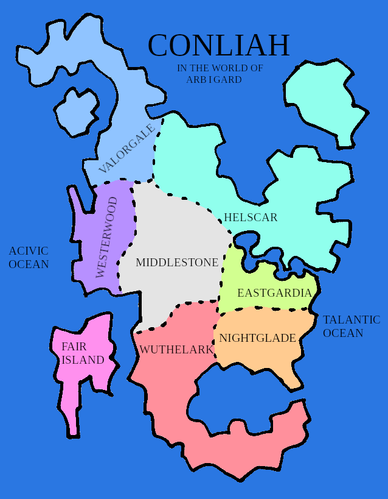
Geographic Summary
Conliah is the main continent on the world of Arbigard. It is bordered by two oceans: the Talantic Ocean to the east, and the Acivic Ocean to the west. The entire continent is approximately 10.8 million square miles in area, including all land and bodies of water.
The Yargyez Empire has divided the continent into eight provinces, each one the homeland of a distinct race:
- Eastgardia is a temperate coastal region to the east, and the heart of the Yargyez Empire. It is the homeland of all Humans.
- Helscar is a land of icy highlands to the northeast. It is the homeland of the Dwarves.
- Middlestone has endless fertile plains at the very center of Conliah. It is the homeland of the Halflings.
- Valorgale is made of volcanically active barrens and boreal forests to the northwest. It is the homeland of the Dark Elves.
- Westerwood is made of dense, old growth forest to the west. It is the homeland of the Wood Elves.
- Fair Island is a massive island of arid mountains to the southwest. It is the homeland of the High Elves.
- Wuthelark is a land of deserts and jungles to the south. It is the homeland of the Catfolk.
- Nightglade is a marsh to the southeast. It is the homeland of the Lizardfolk.
Until very recently, denizens of Conliah believed they were the only continent in the world and no other lands were beyond the oceans. Recently this was proven incorrect by explorers from across the Talantic Ocean, who claim to be from a continent called Lodumpis.
Cosmological Summary

There are three realms in the setting of Nephelai:
- Ksylia has moderation in the quality of soul material and quantity of elemental substance. Arbigard is a flat disc at the center of Ksylia, dividing it into upper and lower hemispheres. This flat disc of unknown size is the surface where mortals dwell. Above Arbigard is a hemisphere called The Skies (the air and the clouds), enclosed by a dome of water called The Firmament. Below Arbigard is a hemisphere called The Neaths (the earth below), enclosed by a dome of magma called The Hade. Ksylia is suspended in a larger cosmos between Asteria and Cthonia.
- Asteria is a realm composed of fine soul material, and very little elemental substance. It is the residence of the Agathoi (good gods) and where souls rest between transmigratory cycles. It is physically above Ksylia, separated from it by The Firmament.
- Cthonia is a realm composed of very degraded soul material, and huge amounts of elemental substance. It is the residence of the Archons (evil gods) and their minions. It is physically below Ksylia, separated from it by The Hade.
It is impossible for mortal beings to freely navigate the wide open realms of Asteria and Cthonia. They can only navigate to spherical subrealms which mortals can, under certain circumstances, phase into. Examples of such circumstances are:
- Naturally, between transmigratory cycles.
- Perceptually, as a vision granted by the divine.
- Intentionally, through powerful magic.
The Agathoi forbid mortals from accessing the Asteric spheres, except during transmigration (between reincarnation between mortal lives). They are not all-powerful, however, so there are exceptions.
In between transmigratory cycles, mortals occupy various Asteric spheres which correspond to their moral conduct in life:
- Neutral lives: their sphere is like a blank, still space for introspection.
- Virtuous lives: the soul is rewarded temporarily by beauty, harmony, and joy.
- Wicked lives: the soul is punished temporarily to atone for their actions.
Some legendary individuals are said to have witnessed the Asteric spheres during life, but these are exceptional circumstances.
Phasing into Cthonic spheres is much more common. The Agathoi have a weaker hold here, so mortals can phase there through magical rituals much more easily. The exact nature of these spheres vary dramatically:
- Some are formless spheres of raw elements.
- Some are domains shaped by Archons reflecting their natures.
Archons are not content to reside in their spheres. The desire of all Archons is to breach the boundary with Ksylia and pull mortals into their domains with the ultimate goal of consuming the entire realm of Ksylia. Their capacity to do so is constrained, because Cthonic beings cannot permanently reside in Ksylia. However, temporary breaches activated by mortals can create indefinitely durable zones of Cthonic influence. By remaining within these zones, lesser Cthonic beings may reside in Ksylia for prolonged stays. They can even venture for a short time outside of these zones, and safely return to them. Thankfully, these breaches mainly occur in pre-Magellian ruins, from a time when Archon worship was common. However, those who intentionally delve into ancient ruins to banish these threats must exercise great caution against the hordes of Cthonians residing there.
Ksylia does not naturally have spherical subrealms. However, the ancient Magellians knew how to warp space to create miniature spheres that mortals could phase into by the same magical means as Cthonic spheres. Within these spheres, the natural laws of Ksylia generally work as expected. The contents of Ksylic spheres varies depending on the intentions of its Magellian constructor. Portals to these Ksylic spheres were typically placed in lockets, mirrors, doors, and paintings.
Technology
The technology level of Conliah is approximately 1100s medieval Europe. Military technology is still based on melee combat, longbows and crossbows, and basic siege weapons. There is very little innovation in magical technology.
The Uzvu Confederation from Lodumpis has advanced technology of approximately 1500s Europe. They possess magical firearms which work similarly to early muskets, pistols, and cannons. They also possess extensive clockwork machinery appropriate to that era.
The Magellian Empire was technologically advanced, being capable of magical bioengineering and construction of gigantic clockwork guardians. This technology is native to Conliah, but is now lost in ancient ruins.
Currency
- The base unit of currency is the Drachma (ud), which is a silver coin. Three Drachmas can buy one night's stay at an average inn.
- A Hemiobol (ho) is a copper coin, worth one-tenth of one Drachma. Two Hemiobols can buy one loaf of bread.
- A Dekadrachma (dd) is a gold coin, worth ten Drachmas. One Dekadrachma can buy one day of rations.
- A Hekatodrachma (hd) is a platinum coin, worth one-hundred Drachmas. One Hekatodrachma can buy an extravagant banquet for one person.
Calendar
The year is 366 days long, with 12 months of exactly 30 days each and concluding with 6 intercalary days. There are no leap years. There are four seasons in Conliah, and daylight changes between months. For each month, there is a birthsign associated with that month, and each of the last 6 intercalary days of the year have their own birthsign. The below sunrise and sunset times are not intended as exact, but are provided for convenience.
| Name |
Type |
Birthsign |
Season |
Sunrise |
Sunset |
| Askonos | Month | Scorpion | Spring | 7:00 AM | 7:30 PM |
| Bamos | Month | Horse | Spring | 6:30 AM | 8:30 PM |
| Chomos | Month | Twin Princes | Spring | 6:00 AM | 9:00 PM |
| Destachtos | Month | Crab | Summer | 6:00 AM | 9:00 PM |
| Ekerios | Month | Sheep | Summer | 6:00 AM | 9:00 PM |
| Flogos | Month | Princess | Summer | 6:30 AM | 8:30 PM |
| Gaieros | Month | Trilobite | Fall | 7:00 AM | 7:30 PM |
| Hanemos | Month | Pig | Fall | 7:30 AM | 7:00 PM |
| Ikatagedos | Month | Servant | Fall | 8:00 AM | 6:30 PM |
| Jostagonos | Month | Spider | Winter | 8:00 AM | 6:30 PM |
| Kepotamos | Month | Donkey | Winter | 8:00 AM | 6:30 PM |
| Lithalasos | Month | Judge | Winter | 7:30 AM | 7:00 PM |
| Uletas | Intercalary Day | Moon | Spring | 7:17 AM | 7:13 PM |
| Valentas | Intercalary Day | Sun | Spring | 7:16 AM | 7:14 PM |
| Wethias | Intercalary Day | Hearth Fire | Spring | 7:15 AM | 7:15 PM |
| Exostas | Intercalary Day | Wedding | Spring | 7:14 AM | 7:16 PM |
| Yargasas | Intercalary Day | Mountain | Spring | 7:13 AM | 7:17 PM |
| Zitimas | Intercalary Day | Thunderbolt | Spring | 7:12 AM | 7:18 PM |
There are seven days in a week, starting with Onodes Day. The days of the week are Onodes, Twetes, Tritos, Fodras, Fefdes, Sigtes, and Seftos.
The moon completes a lunar cycle in 28 days. The first day of the year 189 YE is a full moon, and it is Onodes Day.
Languages
| Language |
Script |
Notes |
| Common |
Common |
Spoken by the Humans of Eastgardia, and most other races. |
| Dwarvish |
Common |
Spoken by the Dwarves of Helscar. |
| Halfling |
Common |
Spoken by the Halflings of Middlestone. |
| Dark Elvish |
Elvish |
Spoken by the Dark Elves of Valorgale. |
| Wood Elvish |
Elvish |
Spoken by the Wood Elves of Westerwood. |
| High Elvish |
Elvish |
Spoken by the High Elves of Fair Island. |
| Catfolk |
Elvish |
Spoken by the Catfolk of Wuthelark. |
| Lizardfolk |
Common |
Spoken by the Lizardfolk of Nightglade. |
| Orcish |
Orcish |
Spoken by the Orcs of Lodumpis, and most other Lodumpan races. |
| Goblin |
Orcish |
Spoken by the Goblins of Lodumpis. |
| Ogre |
Orcish |
Spoken by the Ogres of Lodumpis. |
In addition to the languages spoken by those of a particular race, every Archonic cult also has a secret spoken language with its own distinct writing system. In general, these secret languages can be understood by minions, corrupted beings, and cultists who are within the Archon's influence.
History
MEDIOCRATES: Do you agree with me, that resting and moving are direct opposites?
THEOMISUS: Certainly.
MEDIOCRATES: Do you also agree with me that when a thing is resting or moving, the thing exists?
THEOMISUS: Yes, again.
MEDIOCRATES: Then existence is a third quality which is different from that of resting or moving.
-- The Forty-First Cloudruled Dialogue: The Theomisus
Mythological history

The below is an account given by the poet Romulus (a High Elf poet who adored the Yargyez Empire) in the year 25 YE. It is the official account of the Yargyez Empire, and the most complete account of mythic pre-history, but there are many contradicting myths in Conliah.
In the beginning, the universe existed in a state of chaos. The elements fire, water, air, earth, sunlight, and moonlight existed as unformed, chaotic motion diffusely scattered throughout the void of the universe.
Gora was a benevolent and intelligent being who could mold the elements and give them structure. Her desire was to bring order into the universe.
Her first and most important act was to fashion soul material. Soul material was a substance which animated all living things. This task was very difficult for Gora, and not all the soul material she created was of uniform quality. The finer the soul material, the more benevolent the living thing was. Lower qualities of soul material resulted in less benevolent living things. However, she decided to use both higher and lower qualities of soul material in creation, because she still judged that existence is better than non-existence.
Her second act was to divide the cosmos into three realms: Asteria, Cthonia, and Ksylia. The purpose of Asteria was to house the finest soul material, the purpose of Cthonia was to house the elements, and Ksylia would bind soul material with elements into structured matter. Ksylia was divided into The Skies, The Neaths, and Arbigard between them. The Firmament was created to separate Ksylia from Asteria, and The Hade was created to separate Ksylia from Cthonia.
Her third and last act was to create the souls of Agathoi out of first-rate soul material. These were benevolent and intelligent beings, who listened to Gora's will. Each Agathos was assigned responsibility for a fundamental principle of the cosmos. The souls of the Agathoi resided in Asteria, yet their influence extended into Ksylia. Gora explained her plan to the Agathoi, delegated all further tasks to them, and ceased to develop the cosmos further herself.
The first act of the Agathoi used second-rate soul material to create the souls of mortals. Because their souls were inferior to the Agathoi, they could not permanently reside in Asteria. These beings were capable of reason and virtue, but also error and corruption.
The second act of the Agathoi was to craft mortal bodies out of the six elements in order to sustain mortals in Ksylia.
The third act of the Agathoi was to establish a system of transmigration to purify mortal souls and eventually reunite them with Asteria. Mortal souls continued through the cycle of life and death over multiple lifetimes according to the morality of their actions during life. The Agathoi did this because Gora did not desire for these mortals to permanently exist in Ksylia. However, the soul adjusted its memory and perception to the realm it occupied. Prolonged exposure to the brilliance of Asteria caused the soul to adjust, and eventually lose its memories of mortal life. Again, when they returned to Ksylia, the soul adjusted to its darkness, and forgot its experience of Asteria. Therefore, mortals did not retain memories across their lives.
The fourth and last act of the Agathoi was to create all other animals using third-rate soul material. These creatures populated Ksylia with simpler beings which would help mortals to sustain themselves.
During the infusion of the elements with soul material, there were highly degraded fragments of soul material which unintentionally descended into Cthonia and combined with the raw elements. This animated the elements spontaneously, making them alive and intelligent but alien to the celestial order established by Gora. These creatures were called Cthonians. Some of these Cthonians were lesser beings, much like typical mortals and animals, but some were incredibly powerful. These powerful Cthonians became known as Archons.
The soul material of Cthonians was so degraded that they could not permanently reside in Ksylia, much as mortals could not permanently reside in Asteria.
Mortals perceived the might of these Archons, and fearing them, began to worship them as gods. They sacrificed to them, formed cults, and raised temples to them. As a result there remained a cosmic struggle between these two sets of powerful beings: the Agathoi who were made with first-rate soul material who reside in Asteria, and the Archons who were formed with highly degraded fragments of soul material who reside in Cthonia.
After creation was finished, the Agathoi withdrew from Ksylia. Over time, distinct races emerged across Arbigard with their own cultures and identities. Civilizations rose and fell over the ages, with worship of the Agathoi and the Archons shifting back and forth.
Written History

c. 3000 BYE - 1567 BYE
Before any continent-spanning empires, Conliah was politically decentralized. This era is often referred to as the "Age of Might Makes Right". The eight races - High Elves, Dark Elves, Wood Elves, Dwarves, Halflings, Humans, Lizardfolk, and Catfolk - populated the continent in city-states, small kingdoms, and tribes. Borders were constantly shifting, and warfare was a common means of resolving disputes. The Archons were openly worshipped across Conliah. Their cults promised strength to their followers in exchange for submission. The Agathoi were unknown to most of Conliah, and were only a small cult within the Wood Elves in the Kara Ates mountains. Every province was divided into many cultures and political formations. Nonetheless, the kernel of higher political formations were present, and every province was yearning for the rule of law. This paved the way for the fast rise of the Magellian Empire.
Worship of the Agathoi spread across Westerwood, which had a long history of war, conquest, and economic exchange with Fair Island. As a result, the High Elven empires of Fair Island gradually adopted Agathos worship themselves.
1566 BYE - 566 BYE
A great kingdom consolidated power across Fair Island, and declared itself the Magellian Empire. It rapidly conquered the continent of Conliah with advanced technology powered by unprecedented arcane science. They banned Archon worship and instituted Agathos worship, which was unknown outside of Westerwood and Fair Island at that time. The provinces were united for the first time, and the High Elves imposed their worldview on the other races. This worldview included an emphasis on rationality, control, and introspection. They constructed centers of arcane scientific research across the continent.
After a long period of stability and prosperity, unusual ways of thinking emerged. One school of thought referred to themselves as the Cloudruled. They evaded persecution because although they denied the divinity of the Agathoi as mere superstition, they worshipped the clouds instead, and not any Archon. The Cloudruled claimed that lightning comes not from the wrath of Iazus, but the clouds themselves. They questioned why the Archons were able to send their Cthonian minions to Arbigard to corrupt mortals, but even as Agathos worship was dominant in Conliah nobody could observe Asterian minions of the same sort. It seemed to the Cloudruled that if the Agathoi were as described, they could intervene more directly to cleanse the Archonic threat. They established centers of learning called Phrontisterions, which were enormous floating buildings. At these Phrontisterions they trained the youth to argue against elders, defy norms, and scorn tradition. Their rhetorical methods were so excellent that they could make an unjust position appear just.
In an event later called "The Great Nothing", group of youth educated by the Cloudruled plotted an assassination against the Emperor and his heirs. The result was a succession crisis that could, theoretically, be resolved legally through an election at lower levels of government. However, the assassins made arguments that there could be no rightful successor that were so strong that government was gridlocked. What resulted was a continuation of the imperial bureaucracy that no longer had an emperor. Within a few years, the empire dissolved into rival states ruled by provincial governments. Over time, the magical technology spread by the Magellians was lost and the only remnants are magical, mechanical, and monstrous mysteries of their past. The magical knowledge behind the floating Phrontisterions was lost, and they collapsed into the ground.
565 BYE - 1 BYE
After the Magellian Empire collapsed, there was a long dark age. Various successor states claimed legitimacy, but none were able to consolidate power over the whole continent. Agathos worship remained the dominant religion, but each state interpreted the myths differently and combined them with local traditions. Archon worship was taboo, but it gradually gained a minority of practitioners. The teachings of the Cloudruled, in the form of written dialogues, were lost. This period lasted until humans from Eastgardia conquered Conliah and established a second empire.
During this period, many Magellian structures fell into ruin, or were repurposed by the locals of each province. As Agathos worship became blended with syncretic practices, new temples were constructed and old ones were modified. Practices of ancestor veneration became common again, and the rituals involved tended to interfere with transmigration. As a result, ghosts were bound to their resting places. Lastly, the many small kingdoms that arose were constantly at war with each other. Great fortresses were constructed to defend the land, and to prepare attacks on others.
1 YE - 189 YE (present)
Humans conquered Conliah, uniting it once again. 1 YE marks the consolidation of power of the Yargyez Empire. It conceived itself as the successor of the Magellian Empire. The eight races - High Elves, Dark Elves, Wood Elves, Dwarves, Halflings, Humans, Lizardfolk, and Catfolk - were brought under one government, each having partial autonomy in its own province. Agathos worship was standardized under the Imperial Cult, displacing local rites, and Archon worship was banned again.
Now, in the past twenty years, the below events happened:
- 170 YE: Contact was made with peoples from a continent in the east named Lodumpis. They called themselves the Uzvu Confederation, a coalition between Orc warlords, Goblin traders and craftsmen, and Ogre manual laborers and soldiers. They have brought with them arcane technology superior to the Yargyez but inferior to the Magellians, and claim to be on a divine civilization mission to bring the continent under the ruler of the Uzvu Confederation.
- 172 YE: A group of high ranking Human officials launched a failed coup against the emperor in Inton. It was later uncovered that they were Brannenlads, cultists of Lundazing.
- 175 YE: In Nightglade, a faction of Lizardfolk launched a rebellion against the Empire. They were suppressed with force, undermining the legitimacy of the Empire.
- 178 YE: In western Helscar, a coalition of Chieftains have agreed to revive forbidden forms of ancestor worship that interfere with transmigration, which the Imperial Cult considers a heresy.
- 178 YE: Philosophical lodges across the continent have joined forces for mutual protection, calling themselves the Philosophers Guild. While not promoting outright Archon worship, their questioning opens the door to heresy.
- 180 YE: The Osti Tribe has openly revived worship of Dreze, the Archon of Endurance, against the will of their fellow Ashfallen Tribes and the Empire.
- 188 YE: In complete secrecy, a faction operating across Valorgale, Westerwood, and Fair Island is conspiring to overthrow the Yargyez Emperor and install an Elven-ruled empire.
- 188 YE: A secret referendum was held by the Artisans Guild that, if Uzvu victory in Conliah appears immanent, then the Artisans Guild will begin trading with the Uzvu.
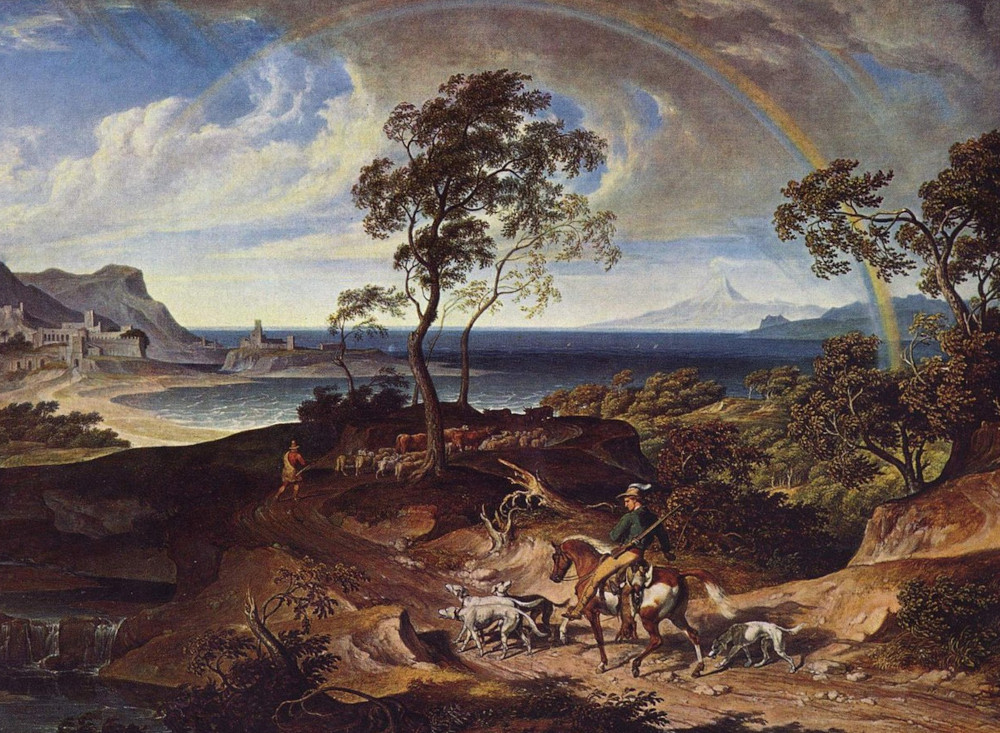
Races
KAITO THE HALFLING: Tell me, friends, were the laws written by an Agathos or by a mortal?
ASEM THE WOOD ELF: An Agathos, Kaito, but I do not know which one. Among us Wood Elves we say Iazus made the laws, but High Elves like Sitarophilus say Burrue did it. Is that right, Sitarophilus?
SITAROPHILUS THE HIGH ELF: You are right we do, Asem, but I also do not really know.
-- The Thirty-Third Cloudruled Dialogue: The Warlords
Humans

- Physical Description: Humans are highly varied in their physical appearance.
- Homeland: They hail from the temperate coast of Eastgardia, which has a variety of mountains, hills, forests, and wetlands.
- Culture: Human society is defined by pragmatism, diplomacy, and political aptitude.
- Disposition: As the ruling race of the Yargyez Empire, Humans seek to maintain its continuity in Conliah, restore its former glory, and broker agreement between the other provinces.
- Language: Humans speak Common, the official language of the Yargyez Empire.
- Names:
- Male: Lale, Kite, Rothik, Barap, Satip, Guthin
- Female: Giha, Basitra, Resha, Kata, Sapitha, Valeta
Dwarves
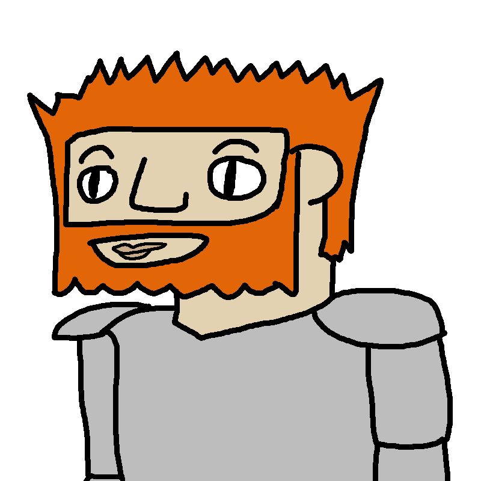
- Physical Description: Dwarves are stout, standing at about 4 feet tall. They are generally broad and strong.
- Homeland: Their homeland is the icy mountain province of Helscar.
- Culture: Dwarven society emphasizes stoicism, artisanry, military reverence.
- Disposition: The mountain Dwarves of western Helscar tend towards demanding greater autonomy from the Yargyez Empire, whereas the foothill Dwarves of eastern Helscar tend towards loyalty and integration with the Empire.
- Language: Dwarves speak Dwarvish and Common.
- Names:
- Male: Yurz, Frang, Wolfhan, Horik, Yarel, Karik
- Female: Heigrid, Inya, Sonti, Elya, Godhi, Bagrid
Halflings
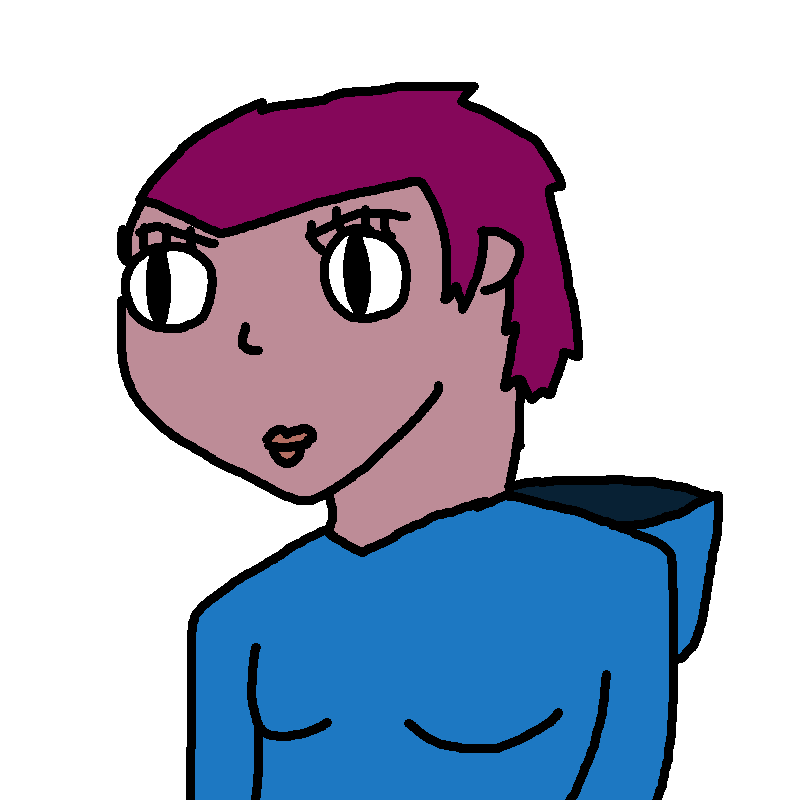
- Physical Description: Halflings are small, standing between 3 and 4 feet tall. They are skinnier and frailer than Dwarves.
- Homeland: They hail from Middlestone, which consists of three regions: rolling hills and valleys to the north, a massive fertile prarie in the center, and forested hills to the south.
- Culture: Halfling society values chivalry, formal etiquette, humility, and piety.
- Disposition: As a central and agriculturally productive region, Middlestone was under constant attacks from adjacent regions during the interregnum. As a result, Halflings are among the most fervent supporters of the Yargyez Empire as protectors.
- Language: Halflings speak Halfling and Common.
- Names:
- Male: Ashiko, Yokashi, Takira, Kiriko, Shishito, Katako
- Female: Fuho, Miho, Shiko, Niko, Kiko, Tato
Dark Elves
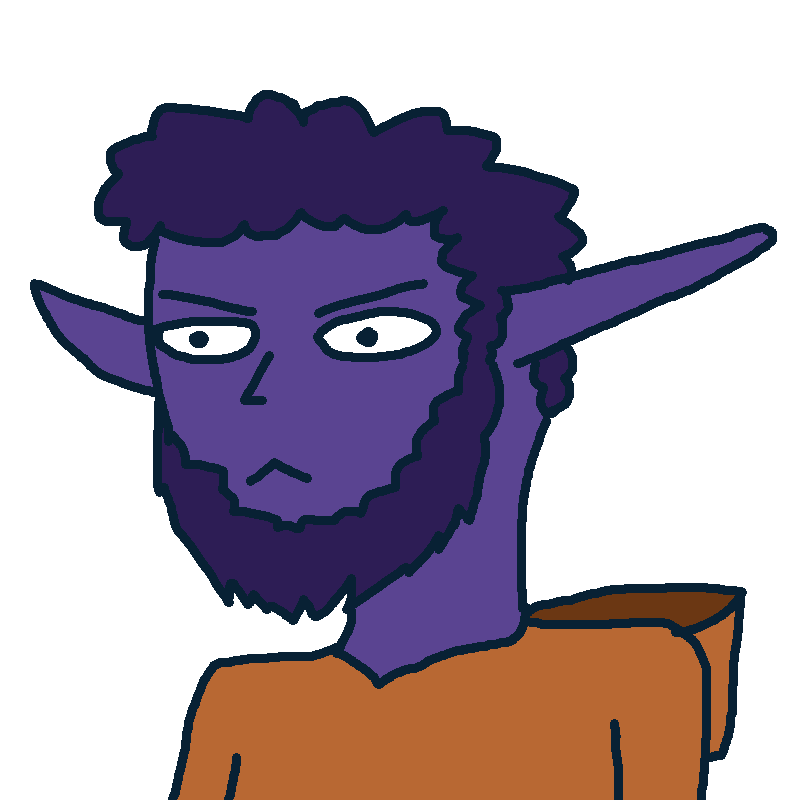
- Physical Description: Dark Elves are of average height, slender, with dark gray to bluish purple skin.
- Homeland: Their homeland is the volcanic taiga province of Valorgale.
- Culture: Dark Elven culture is steeped in secrecy and clan loyalty.
- Disposition: Perspectives on the Yargyez Empire vary widely across clans: some are loyal to the Yargyez, and others are outright Archon worshipping revivalists.
- Language: Dark Elves speak Dark Elvish and Common.
- Names:
- Male: Azong, Taiguda, Tiyun, Gozing, Yongtin, Gaiti
- Female: Bumjer, Erbutai, Jerdeni, Umbani, Erjer, Jerutai
Wood Elves

- Physical Description: Wood Elves are short and slender, with olive-toned to brown skin.
- Homeland: They hail from the mountainous forests of Westerwood.
- Culture: Wood Elven culture values ecological spirituality, resourcefulness, and a strong hunting tradition.
- Disposition: Having historically suffered under High Elf domination, Wood Elves see the Empire as a stabilizing buffer preserving their autonomy. However, there are secret factions in Westerwood who side with High Elven revivalists.
- Language: Wood Elves speak Wood Elvish and Common.
- Names:
- Male: Takhildin, Turlandel, Akhsunal, Lursukhil, Tamirnal, Mirlakhil
- Female: Nazhan, Ainura, Dilima, Gizhan, Zhanura, Linira
High Elves
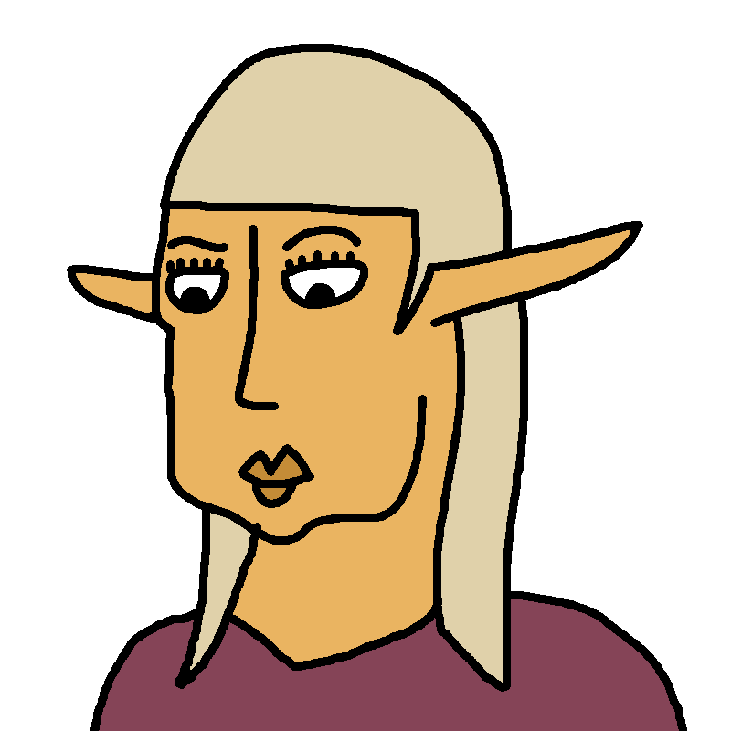
- Physical Description: High Elves are tall and slender, with radiant golden skin.
- Homeland: They hail from the arid mountains of Fair Island.
- Culture: High Elven society upholds religious dogma, the arcane arts, and a hierarchy based on lineage.
- Disposition: High Elves are nostalgic for the Magellian Empire, which prioritized High Elf superiority. Many High Elves view the Yargyez Empire as having strayed from the original form of Agathos worship practiced in the Magellian Empire.
- Language: High Elves speak High Elvish and Common.
- Names:
- Male: Achos, Taleas, Diacrates, Lenysis, Goreas, Homias
- Female: Astera, Zedara, Ozia, Elaria, Dorela, Soria
Catfolk
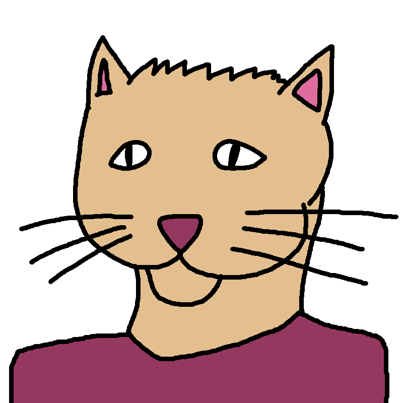
- Physical Description: Catfolk are feline humanoids with sandy brown fur, upright ears, sharp claws, and long tails.
- Homeland: They hail from Wuthelark, which consists of three regions: a jungle to the south, a desert to the north, and a mountain range dividing them.
- Culture: Catfolk culture centers celestial spirituality, clan loyalty, and libertinism.
- Disposition: Perspectives on the Yargyez Empire are split geographically between jungle and desert Catfolk. The northern nomads resist the Yargyez Empire's encroachment due to its unwillingness to recognize nomadic land rights.
- Language: Catfolk speak Catfolk and Common.
- Names:
- Male: Golni, Pundi, Dadiya, Tunnad, Samuha, Dvariya
- Female: Bangu, Binan, Enduk, Konis, Kalis, Untam
Lizardfolk
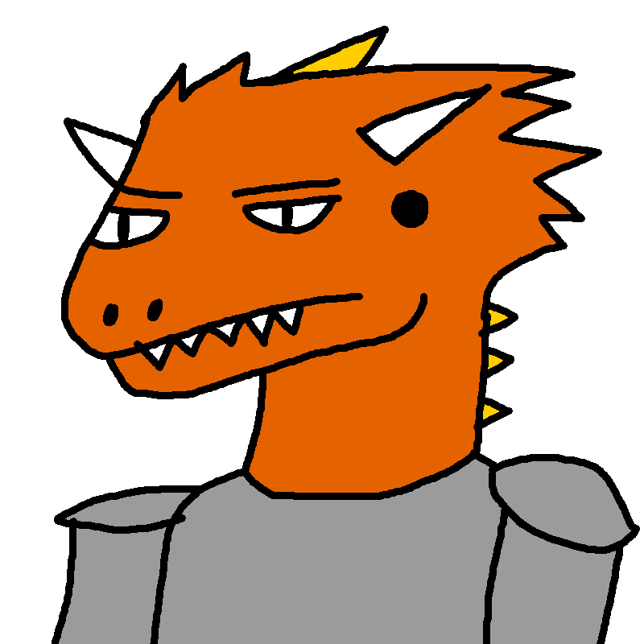
- Physical Description: Lizardfolk are reptilian humanoids with red or greenish brown scales and sharp claws.
- Homeland: They hail from the marsh province of Nightglade.
- Culture: Lizardfolk culture emphasizes ecological spirituality, ancestor veneration, and clan loyalty.
- Disposition: Lizardfolk are, on the whole, enemies of the Yargyez Empire. The Lizardfolk rulers who agreed to peacefully cede their lands to the Yargyez Empire in exchange for continuous rule are viewed as traitors to their own race. Factions of Lizardfolk across Nightglade actively resist Yargyez presence in the province. Many rebels have taken to underground caves across Nightglade and Eastgardia to stage attacks on Imperial outposts.
- Language: Lizardfolk speak Lizardfolk and Common.
- Names:
- Male: Yengtan, Hobuing, Dongok, Toavan, Kuyet, Sontan
- Female: Bithui, Nuwan, Natlan, Thiho, Tangko, Trinku
Orcs

- Physical Description: Orcs are tall and strong. Their faces are somewhat warthog-like, with straight medium-length tusks, elongated snouts and small lower jaws, pronounced cheekbones, and short pointy ears. Their skin is primarily green with a tinge of gray, and their fur covers their entire body with a mix of black and brown hues.
- Homeland: The Orcs are one of the Lodumpan races.
- Culture: Orcish culture upholds religious dogma, hereditary hierarchy, and reverence for military service.
- Disposition: They see the Yargyez Empire as decadent and corrupt, and view the incursion of the Uzvu as a divinely sanctioned civilizing mission.
- Language: Orcs speak Orcish.
Goblins

- Physical Description: Goblins are small humanoids. Their faces are somewhat babirusa-like, with long curved tusks long pointy ears, medium-length snouts and medium-size lower jaws. They are mostly hairless, with a skin tone halfway between green and gray.
- Homeland: The Goblins are one of the Lodumpan races.
- Culture: Goblin culture values commerce, technological inventiveness, and pragmatism.
- Disposition: Goblins view the Yargyez Empire as a repository of riches, ripe for extraction and development.
- Language: Goblins speak Goblin and Orcish.
Ogres
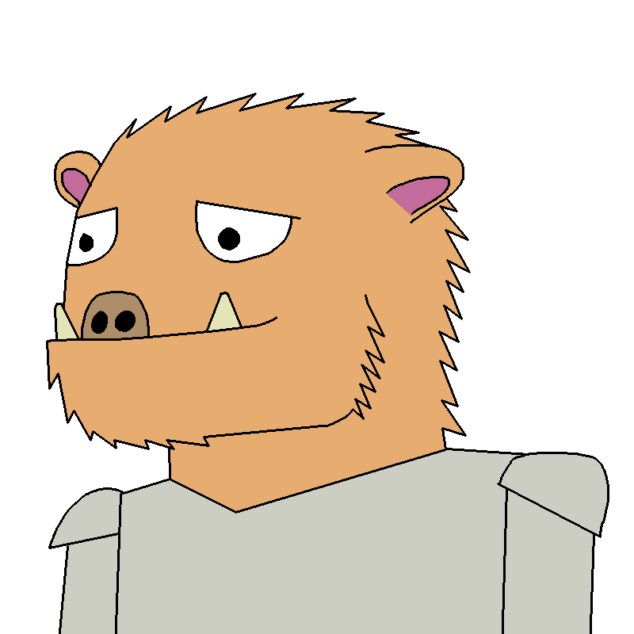
- Physical Description: Ogres are large and broad humanoids. Their faces are somewhat boar-like, with flat snouts, heavy jowls, small tusks, and large lower jaws. Their skin is primarily gray with a tinge of green, and their fur covers their entire body with hues of beige and gray.
- Homeland: The Ogres are one of the Lodumpan races.
- Culture: Ogre culture highlights disciplined work ethic, economic individualism, and a desire for recognition.
- Disposition: They view the Yargyez Empire as an opportunity to raise their social status by acquiring underdeveloped tracts of land in exchange for serving as settler soldiers of the frontier.
- Language: Ogres speak Ogre and Orcish.
Multiple Race Heritage
Although their exact origins are unknown, most races of Conliah share a common lineage which allows full interbreeding between them. This is true for Humans, Dwarves, Halflings, High Elves, Dark Elves, and Wood Elves. Their offspring have traits which are the average of the multiple racial backgrounds. Catfolk and Lizardfolk are exceptions, as biologically distinct species. The possibility of offspring between the races of Conliah and the races of the Uzvu Confederation are unknown at this point. Sentient beings of Cthonic origin are also incapable of producing offspring with mundane sentient beings.
Religion
MEDIOCRATES: What makes a person holy?
DYSTHYPHRO: To be holy is to root out and destroy unholiness: whatever is Cthonic, corrupt, and wicked. The people who dedicate their being to fight against it are called holy. Likewise, failing to root out and destroy unholiness is also unholiness. That definition seems sound, to me.
-- The Fifth Cloudruled Dialogue: The Dysthyphro

Overview of Religions in Conliah
Agathos Worship
The pantheon of the Yargyez Empire recognizes five major Agathoi named the Six Guardians. They are worshipped in public temples and holidays recognized by the Empire. Each Agathos has its own clerical hierarchy and rites, and provinces often combine these with syncretic traditions. Besides these Six Guardians there are also many minor Agathoi who are acknowledged by the Empire as having legitimate cults.
| Name |
Title |
Gender |
Domain(s) |
Notes |
| Iazus |
Sky Mother |
Female |
Storms, Law |
Iazus is one of the Six Guardians. She is called the "first among equals" in the Imperial Cult pantheon, and is revered by emperors and inquisitors. The Order of Iazus sanctions Imperial Cult Inquisitors to hunt down Cthonic threats of various kinds. Her symbol is a thunderbolt and stormcloud, and her elemental domains are wind and lightning. |
| Inidilt |
Mountain King |
Male |
Agriculture, Seasons |
Inidilt is one of the Six Guardians. He is revered by soldiers and farmers. His symbol is a scythe. His elemental domain is earth. |
| Burrue |
Sun Sister |
Female |
Beauty, Philosophy |
Burrue is one of the Six Guardians. She is revered by bards and philosophers. Her symbol is a lyre. Her elemental domain is sunlight. |
| Lidnozie |
Moon Brother |
Male |
Wilderness, Full Moon |
Lidnozie is one of the Six Guardians. He is revered by lumberers and hunters. His symbol is a bow and arrow. His elemental domain is moonlight. |
| Ereng |
Great Presider |
Male |
Marriage, Family |
Ereng is one of the Six Guardians. He is revered by widows and healers. His symbol is an ox. His elemental domain is water. |
| Izdoeng |
Hearth Keeper |
Male |
Peace, Fraternal Love |
Izdoeng is one of the Six Guardians. He is revered by embassadors and second sons. Izdoeng's symbol is a hearth flame, and Izdoeng has a cult of missionaries called Friends of the Hearth Keeper. His elemental domain is fire. |
| Dimie |
Clever Agathos |
Male |
Magic, Artisanship, War |
Minor cult is popular in Fair Island |
| Ivezdazing |
Forge Master |
Female |
Forge, Fire, Craft |
Minor cult is popular in Helscar |
| Vlutodie |
Prince of Joy |
Male |
Beauty, Infatuation, Hedonism |
Minor cult is popular in Middlestone |
| Uzioting |
Lady of the Seas |
Female |
Oceans, Navigation |
Minor cult is popular among fishers |
| Ilnizing |
Swift Agathos |
Female |
Travel, Trade |
Minor cult is popular among merchants |
| Etizing |
Lady Necessity |
Female |
Life, Death |
Minor cult is popular among undertakers |
Outside of the Imperial Cult, there are religious factions of High Elves and Wood Elves who advocate Burrueism, considering the Imperial Cult to be a distortion. They seek to restore the original practices of Agathos worship as spread by the Magellian Empire, including a belief in Elven racial superiority to other mortal races and a belief that Burrue is an emanation of Gora herself.
Archon Worship
Worship of the Archons is forbidden by law. Even so their cults persist, as their power is too alluring to resist. Shrines to them can be found in ancient ruins, concealed temples, and the basements of shady nobles.
Many Archon-worshippers are not philosophically inclined, but some cultists do have deeper musings on the nature of religion. The most common theme is that the Archons are the original creators of Ksylia and their rightful gods. The Agathoi do not exist, but are a metaphor for the conquest of natural desires by imperial civilization itself. Worship of the Archons actively reclaims innate impulses which were wrongly suppressed by the empires of old.
| Name |
Title |
Gender |
Domain(s) |
Notes |
| Igedeng |
Father of Bones |
Male |
Necromancy |
Igedeng's sphere is called the Deadwoods, an endless forest of dead trees partially illuminated by the crescent moon. He is the patron of necromancers and witches. Igedeng's cults are called the Tenkerlads, necromantic researchers who seek his blessings of knowledge of evil magic. His symbol is a crescent moon. |
| Lozie |
Strife Maker |
Male |
Chaos, Pranks |
Lozie's sphere is called the Clashcircus, an enormous circus tent where mortals dress as jesters endlessly battle each other with ridiculous weapons like food and children's toys. Lozie's cults are called the Spokefuglads, bands of pranksters who wander between towns creating unnecessary strife between townfolk. His symbol is an apple with a bite taken out of it. |
| Ogzim |
Lord of the Void |
Male |
Darkness, Silence |
Ogzim's sphere is called the Starless Abyss. There is no land there, only an immense ocean covering the entire sphere. The sky is pitch black, and even the light of fire seems to be absorbed into the void. Gnomes inhabit the Starless Abyss on permanent wooden rafts. Ogzim's cults are called the Tyvenlads, criminal syndicates who steal in his name. His symbol is a face with closed eyes. |
| Lize |
Harvester of Mortals |
Female |
War, Torture |
Lize's sphere is called the Reaping Grounds. Endless fields of wheat are fed by the blood of mortals who her cultists have tortured and slain. Mortals who are phased into her sphere are subject to eternal torment by her Cthonic minions, the Tormentors. These Tormentors are eight-foot-tall muscular humanoids with horns, crimson skin, and hooked tails. Lize's cults are called the Overvelderlads, aspiring conquerors who summon Cthonian servants to aid in their conquest of all of Conliah. Her symbol is a helmet, shield and spear. |
| Uluzing |
Mistress of Ends |
Female |
Fate, Death |
Uluzing's sphere is called the Quaking Peaks. This is a narrow mountain path which leads to an endless abyss on both sides, where mortals must carefully tread without wandering too far in either direction. Furthermore, they are subject to continuous earthquakes that threaten to send them onto one or the other side of the abyss. Uluzing's cults are called the Morderlads, cold-blooded killers who perform assassinations for hire. Her symbol is a knife dripping with blood. |
| Lundazing |
Queen of Destruction |
Female |
Rebellion, Power |
In the Age of Might Makes Right, Lundazing was a popular deity of the Dwarves. Lundazing's sphere is called Cinderthrone. It is a landscape of obsidian and lava, where the air is thick with smog. Ruins of castles and destroyed statues dot the landscape. Cinderthrone is populated by Dragons, who are powerful flying lizards who breathe elemental attacks. She has the power to corrupt mortals into Draklings, which are Dragon-like humanoids. Lundazing's cults are called the Brannenlads, an association of nobles across Conliah who aspire to usurp the Yargyez Emperor. Her symbol is an upside-down torch. |
| Ulviazing |
Dream Caller |
Female |
Dreams, Illusions |
Ulviazing's sphere is the Blissful Hollow. Blissful Hollow is filled with petrified trees and spiderwebs created by Arachnaurs. Arachnaurs are centaur-like creatures with the torso of a human and the lower body of a spider. Arachnaurs spin webs and play their strings like musical instruments. Those corrupted by Ulviazing's promises of blissful dreams become insect-like Husks. Her symbol is a red, pointed cap. |
| Inizozim |
Prince of Last Strike |
Male |
Retribution, Plots |
Inizozim's sphere is the Mirror Marshes. The Mirror Marshes are a wetland filled with perfectly balanced logs on top of stones. Nagas wander around, ensuring that the weight of each logs is perfectly distributed. Those corrupted by Inizozim become fish-like Gutterplots. His symbol is a measuring rod. |
| Nabazie |
Prince of Beasts |
Male |
Lust, Rage |
Nabazie's sphere is the Howling Hall. It is a tremendous, ornate castle populated by Lykoids, humanoid creatures with the faces of wolves. These Lykoids endlessly chase prey animals up and down the halls of the castle. His symbol is three red claw marks. |
| Eovumid |
Mother of Ills |
Female |
Sickness, Blight |
Eovumid is the patron of Blood Monsters - undead creatures who spread their illness through contact with their blood. |
| Dreze |
World Bearer |
Female |
Endurance, Pain |
Dreze's sphere is called the Crucible of Tears. It is a land of barren, wind-swept hills dotted with crumbling ruins. Tremendous chains stretch across the land, intended to hold beings of a size beyond mortal comprehension. Her power is called upon by those in bondage. |
| Omuzast |
Mistress of Revelry |
Female |
Madness, Wine |
In the Age of Might Makes Right, Omuzast was a popular deity of the Halflings. Some still worship her in Middlestone. |
| Embe |
Queen of Forests |
Female |
Wilderness, Plants |
In the Age of Might Makes Right, Embe was a popular deity of the Wood Elves. |
Ancestor Veneration
While the Imperial Cult does not officially recognize its practice, the veneration of ancestors is widespread across Conliah. It is tolerated as long as it's of a more respectful and sentimental nature, and does not interfere with transmigration. For those that perform these more taboo rituals, there are Imperial priests who hunt their practitioners across Conliah. These are the major races which practice ancestor veneration:
- Dwarves believe that their honored dead are granted a unique sphere in Asteria named Erunhall, which is an eternal feast. Their practices include feasts held at burial mounds and burying possessions with the dead.
- Halflings believe that spirits linger in Arbigard until they are given proper burial rights, or else they will become restless spirits. Their practices include shrines placed in crypts and annual feasts in rememberance of the dead.
- Dark Elves believe that even after death, spirits remain connected to the physical location they were buried. Their practices include shrines placed in clan tombs and ritualistic chanting intended to ground the spirits of the dead in Arbigard.
- Lizardfolk believe that even after death, spirits remain connected to the ecology of the marsh. Their practices include carving fetishes believed to be imbued with spirits and the consumption of hallucinogenic plants which they believe allow them to commune with their ancestors.
Cloud Worship
The practice of worshipping clouds appears several times in the history of conliah. It is a mystery how it arose independently several times. Those who believe in Cloud Worship suggest that the observable anti-Cthonic power emanating from the clouds is observably true, and this is how different societies independently discovered they are the true gods. However, nobody has proven this definitively.
- During the Age of Might Makes Right, the Wood Elves of the Ak Ates Mountains in southern Westerwood worshipped the clouds. However, this was displaced by Agathos worship by the Aksu Khaganate, and almost nobody alive today knows that this was practiced.
- The Cloudruled at the end of the Magellian Empire also advocated for cloud worship, stating that lightning comes from the clouds and not Iazus.
- The Uzvu Confederation believe the clouds are the true gods of this world. From their worldview, the Agathos and Archon cults are equally heretical, and they view the extermination of these cults as part of their civilizing mission. While this belief superficially resembles the Cloudruled who taught philosophy towards the end of the Magellian Empire, the Uzvu claim they are unaware of who the Cloudruled were.
Scholars of the Yargyez Empire have attempted to document the religious beliefs of the Uzvu. Their best understanding is that the Uzvu believe that the creator Demvegaz created one world of Ksylia, and inhabited it with mortal beings in the Skies, the Neaths, and Arbigard between them. However, Demvegaz gave all mortal beings free will. The Archons are mortal beings who originated in the Neaths, and rebelled against Demvegaz. The Archons constructed the Hade to separate their realm from the Neaths, as a fortress against Demvegaz. They caused suffering to the mortals of Ksylia, and Demvegaz pitied the mortals. To help them, Demvegaz sacrificed her body and became the clouds. The Uzvu speculate that the Agathoi are a reconstruction of Demvegaz's power by false equivalence to the Archons. They deny the existence of Asteria as a separate realm and likewise the existence of the Firmament, instead believing that souls travel to the highest stratum of the Skies after death.
Devouts of cloud worship have powers identical to devouts of the Six Guardians, but which Guardian their powers resemble changes depending on the formation of clouds and precipitation.
- No Clouds, No Rain: Their powers resemble devouts of Burrue.
- Partly Cloudy, No Rain: Their powers resemble devouts of Inidilt.
- Overcast, No Rain: Their powers resemble devouts of Lidnozie.
- Light shower: Their powers resemble devouts of Ereng.
- Thunderstorm: Their powers resemble devouts of Iazus.
- Rainbow visible: Their powers resemble devouts of Izdoeng.
Magic
TIMORUS: Now you tell me, what kind of magic is rhetoric?
MEDIOCRATES: Honestly, Timorus, rhetoric is not any kind of magic.
TIMORUS: Then what, exactly, is rhetoric?
MEDIOCRATES: I would call it a tendency.
TIMORUS: A tendency for what, Mediocrates?
MEDIOCRATES: A tendency to create impressions in others, regardless of their truth.
-- The Twenty-First Cloudruled Dialogue: The Timorus

Overview of Magic
Soul material flows ambiently throughout all three realms, but it is inaccessible to the uninitiated. Those who can obtain access to large quantities of soul material gain the power to magically manipulate the world to their will. However, the powers of magic wielders differ based on the source of soul material. There are six categories of people who can achieve these results: Wildmages, Schoolmages, Wretches, Invokers, Ardents, and Devouts.
Spell Categories
- Cthonic Warding spells are aimed at warding off Cthonians and the undead.
- Curse spells are aimed at bringing misfortune to their targets.
- Detection spells are aimed at perceiving otherwise unseen things.
- Elemental Damage spells use raw elemental forces to inflict damage. The six categories of elemental damage are sunlight, moonlight, fire, water, air (including lightning), and earth.
- Exorcism spells are aimed and purifying and banishing evil forces.
- Healing spells are aimed at restoring the health and wellness of their targets.
- Illusion spells are aimed at creating false appearances to their targets.
- Mental Influence spells are aimed at affecting a person's mental state.
- Protection spells involve warding off physical and magical attacks.
- Self-Buff spells are aimed at enhancing one's own abilities.
- Soul Binding spells involve infusing physical things with soul material.
- Summoning spells call forth Cthonic entities to help the caster.
- Transmutation spells manipulate physical substances.
- Utility spells are a catch-all category for non-combat spells that don't cleanly fit in other categories.
Magic Wielder Types
The below list of Magic Wielder Types includes a listing of what Spell Categories the Magic Wielder Type generally has access to. These are not absolute rules, but guidelines that instruct the tone of each category.
- Always means the wielder type unequivocally has access to this kind of magic.
- Sometimes means the wielder type may have access to variants of this magic which align thematically with the type.
- Rarely means the wielder typically does not have access to this kind of magic.
Wildmage
Wildmages passively absorb high amounts of soul material from their surroundings, then unleash their built-up soul material in a burst.
- Always: Elemental Damage, Illusion, Mental Influence, Utility
- Sometimes: Curse, Detection, Protection, Self-Buff, Transmutation
- Rarely: Cthonic Warding, Healing, Exorcism, Soul Binding, Summoning
Schoolmage
Schoolmages are educated by the Academy of Knowledge to understand the physical laws of Ksylia. This enables Schoolmages to cast spells by accessing the ambient soul material that flows through Ksylia. Low-level spells like elemental projectiles and defensive wards are commonplace, but knowledge of even these basic spells implies years of dedicated study at an Academy of Knowledge university. High-level spells like flight, teleportation, and weather manipulation are legendary powers not known to the Academy of Knowledge but learnable through re-discovery of ancient tomes.
- Always: Detection, Elemental Damage, Illusion, Mental Influence, Soul Binding, Protection, Transmutation, Utility
- Sometimes: Curse, Healing, Self-Buff, Summoning
- Rarely: Cthonic Warding, Exorcism
Wretch
Wretches are individuals directly touched by Cthonia, without having a deliberate pact with a specific Archon. As a result, Wretches have lingering Cthonic energy coursing through their bodies which they can use to cast powerful spells.
- Always: Curse, Elemental Damage, Mental Influence
- Sometimes: Detection, Illusion, Self-Buff, Soul Binding, Summoning, Utility
- Rarely: Cthonic Warding, Healing, Exorcism, Protection, Transmutation
Invoker
Invokers are members of Archonic cults who have directly communed with the Archon to receive their power. They continue to receive the blessing of the Archon through obedience, enabling them to channel the Archon's power into magical spells.
- Always: Curse, Mental Influence, Soul Binding, Summoning
- Sometimes: Detection, Elemental Damage, Illusion, Protection, Self-Buff, Utility
- Rarely: Cthonic Warding, Healing, Exorcism, Transmutation
Ardent
Ardents are philosophers who have obtained enlightenment, flooding their bodies with Asteric soul material. They may channel this Asteric soul material into magical spells, as long as they remain in their elevated state.
- Always: Detection, Healing, Exorcism, Protection, Utility
- Sometimes: Cthonic Warding, Illusion, Self-Buff, Transmutation
- Rarely: Curse, Elemental Damage, Mental Influence, Soul Binding, Summoning
Devout
Devouts are members of the Imperial Cult who obey the will of a specific Agathos. Through their obedience to the Agathos, they receive a divine blessing which grants divine magical powers. There are certain spells which devouts hypothetically have access to, but which are considered unacceptable by the Imperial Cult authorities. Examples are reviving a recently deceased person, or speaking to the soul of a recently deceased person.
- Always: Cthonic Warding, Detection, Healing, Exorcism, Protection
- Sometimes: Elemental Damage, Mental Influence, Self-Buff, Transmutation, Utility
- Rarely: Curse, Illusion, Soul Binding, Summoning
Soul Color
The term "color" in reference to soul material is not literal, but refers to the magically detectable differences in signature based on where the soul material originated from. The color names are ancient conventions which have carried into the present, but it is only a feeling within the one probing magically infused substance. Soul color applies to both ambient soul material and discrete souls, but not all colors exist in both forms.
- Green Souls: In the absence of other magical influences, mortals who are sentient have green souls. Green souls transmigrate, and their spirits are also clearly green. Ambient green soul material does not exist whatsoever.
- Yellow Souls: Wildmages and Schoolmages have green souls, but also have a noticeable aura of concentrated yellow soul material. Animals besides the sentient mortal races have discrete yellow souls. They do not transmigrate, and their souls dissipate into Ksylia upon death. Ambient yellow soul material flows throughout Ksylia.
- Blue Souls: Devouts and Ardents have green souls, but also emit faint traces of blue soul material. The Agathoi have discrete blue souls, and are presumed to be immortal. Ambient blue soul material flows throughout Asteria.
- Red Souls: Wretches and Invokers have green souls, but also emit faint traces of red soul material. Cthonians have discrete red souls, and their souls return to their respective sphere of Cthonia upon death. Red soul material flows throughout Cthonia.
Soul Binding & Enchanting
Artifacts, locations, and other physical things may be infused with soul material. The effects of this infusion differ based on the nature of the soul material used and the techniques involved. The below list is not exhaustive, but provides an overview of common forms of soul infusion.
- Yellow Soul Bound Artifacts: Requires sacrifice. The most common way to enchant artifacts with powerful magical properties is through the sacrifice of a living thing. The Imperial Cult does not forbid the use of animals for this purpose.
- Green Soul Bound Artifacts: Requires sacrifice. Much more powerful enchantments are possible through the use of a green soul, instead of a yellow one. However, the transmigration cycle is sacred, and using green souls for enchanting is strictly forbidden. The act of binding a green soul is considered an offense punishable by death, equal in gravity to Archon worship.
- Yellow Soul Bound Locations: Requires sacrifice. A location may be enchanted with various magical properties.
- Blue Enchanted Artifacts & Locations: Does not require sacrifice. Ardents and Devouts can imbue blue soul material into a physical object or location, granting it the power to repel Cthonians. This is a very difficult process for all metals except silver, which readily absorbs blue soul material.
- Red Enchanted Artifacts & Location: Does not require sacrifice. Various forces of Cthonia can imbue red soul material into a physical object or location, granting it destructive and corrupting powers.
- Artifical Constructs: The nature of artifical constructs varies greatly based on their soul origin. These are elaborated upon in much greater detail in the Monsters section (see Artificial Monsters). The Magellian Empire experimented on the binding of green souls in various ways now considered heretical by the Imperial Cult, but the art was lost to time. In theory, the Imperial Cult also seeks to destroy these constructs to free their green souls, but it's a secondary concern as compared to eliminating Cthonic threats.
Magic Wielders in Cthonia
When a Magic Wielder phases into a sphere of Cthonia, their powers dramatically change. Invokers and Wretches become much more powerful, due to their proximity to their own power source. Wildmages and Schoolmages retain some of their power, because their mortal souls are tethered to Ksylia in a way that is not fully interrupted by phasing. However, their power is significantly stunted such that a wisened Schoolmage feels like a novice again. Devouts and Ardents become magically powerless due to the spiritual pressure of the surrounding environment.
Factions
KAITO THE HALFLING: What is most just for an empire: firstly to destroy the worse faction and enthrone the better, secondly to enthrone the better faction and force the worse to submit, or thirdly to reconcile them and neither destroy the worse or force it to submit?
SITAROPHILUS THE HIGH ELF: Obviously the third option.
KAITO THE HALFLING: That would be the most just option. And clearly, the empire who chooses the third option will not be at war, but will be at peace. Therefore, the empire which is just will be at peace with itself.
SITAROPHILUS THE HIGH ELF: Again, obviously so.
KAITO THE HALFLING: And the empire is now at war with itself, is it not?
-- The Thirty-Third Cloudruled Dialogue: The Warlords
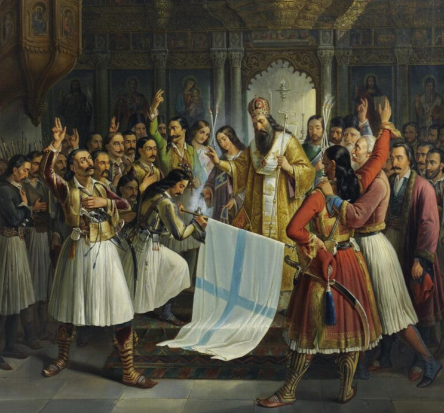
The Yargyez Empire
The Yargyez Empire is the dominant political force on the continent of Conliah. The center of power in the Yargyez Empire is the royal palace in Inton, Eastgardia. The Yargyez Emperor is the absolute ruler of the Yargyez Empire. The Grand Vizier oversees the Imperial Council and reports directly to the Yargyez Emperor.
The Imperial Council handles the day-to-day affairs of the Empire. It is composed of viziers, Royal Guard generals, and religious scholars. The Imperial Council decides the law and its practical enforcement across Conliah. They appoint provincial governors for each province across the continent, and have the power to revoke provincial governors' authority at-will.
The banner of the Yargyez features a white thunderbolt with three zags on a blue background.
The Royal Guard
The Yargyez Royal Guard are the military and law enforcement of the Yargyez Empire. They are a disciplined fighting force that works to suppress dissent.
The Uzvu Confederation
The Uzvu Confederation are a foreign state from a newly encountered continent named Lodumpis. They are a technologically advanced civilization that views its military incursion into Conliah as divinely sanctioned.
Their symbol is a white greataxe standing up straight, with three tulips at the base. The tulips are red, orange, and yellow with green stems. Behind the logo is a black background.
The Synomachos
The Synomachos are a conspiracy of High Elves, Wood Elves, and Dark Elves to overthrow the Yargyez Empire and establish High Elven rule. However, they operate in complete secrecy and nobody in Conliah is aware of this conspiracy, yet.
They seek the dissolution of the Imperial Cult, and its replacement with Burrueism which they consider the correct form of worship as spread by the Magellian Empire. This includes a belief in the racial superiority of the Elves above other mortal races.
They seek to dissolve the Imperial Cult pantheon and establish their own Burrueist Cult. The title "first among equals" is to be stripped from Iazus. Then Burrue will become the head of the pantheon - "first" but not "among equals" - with the other five being subordinated to Burrue.
Their signal to launch their secession is the first full moon of 190 YE, a year from now. This will be the 26th of Askonos, 190 YE. The King Typhen Maphelius of Fair Island is already part of the Synomachos. Khagan Anim Beldek of Westerwood will be usurped by Chieftain Tosir Arakzan, and the council of Ashfallen Tribes in Valorgale will be overthrown by the Pataf Tribe. Once power has been consolidated in these three provinces, the next phase of the plan is to invade the rest of Conliah.
The secret symbol of the Synomachos is a twelve-pointed sun.
The Belligerantes
The Belligerantes are a continent-spanning paramilitary organization with public-facing and private operations. As a public organization they operate as blades for hire, assisting smaller settlements that the Empire will not send aid to. As a private organization, they seek to overthrow the Yargyez Empire and institute a new order which can secure Conliah against enemies within and without. The majority of soldiers in the Belligerantes are aware of their unspoken goal to overthrow the Yargyez. The signal they are waiting for is the death of the emperor by natural means or assassination. Either way, they plan to attack the capital and seize the bureaucratic machinery of the Yargyez Empire. They shun magic and stealth as cowardly, favoring marching into battle in heavy plate armor with swords and shields.
In addition to seeking to overthrow the Yargyez Empire, the Belligerantes plan to reorganize the Imperial Cult. They believe the title of "first among equals" belongs to Inidilt, not Iazus.
There are about 2,000 members of the Belligerantes: approximately 1,600 infantry soldiers and 400 cavalry, and a small number of higher officers. For the higher ranking officers the hierarchy is the Supreme Commander, Captain, and Lieutenant. Below Lieutenant, the hierarchy divides between infantry and cavalry. For infantry the hierarchy is Sergeant, Corporal, Senior Private, and Private. For cavalry the hierarchy is Marshal, Brigadier, Senior Cavalier, Cavalier. There are approximately 24 Lieutenants across Conliah, and there are 8 Captains: one Captain for each province.
The keystone officers are the Lieutenants, who operate out of chapterhouses. Lieutenants have two roles: firstly, they intake mercenary jobs and submit them to their Captains for review and prioritization. Secondly, they are the commanding officers of infantry Sergeants and cavalry Marshals on-the-ground during missions.
The physical presence of the Belligerantes is through the chapterhouses. The Belligerantes headquarters is a large chapterhouse located in Omugi, Middlestone. All of their members are volunteers who perform various occupations when not in combat. The most common occupations are artisans and laborers. There are also passionate academics who volunteer out of a desire to defend Conliah, as well as nobles who occupy many of the higher officer roles.
Due to the outsized responsibility of the Lieutenants, there are several consequences:
- They tend to be more personally invested in the work than officers higher and lower than them
- They have outsized influence and may form subfactions of loyal subordinate officers, which threaten the integrity of the whole organization
- They are often involved in this line of work for opportunistic personal gain rather than altruism or honest pay.
The emblem used by the Belligerantes is a long black horizontal line below a solid red triangle, representing a stylized mountain.
The Artisans Guild
The Artisans Guild is a price-fixing monopolist organization that represents the interests of large urban manufacturers against both merchants and political powers. They represent various kinds of craftspeople such as potion makers, blacksmiths, leathersmiths, and enchanters of magical weapons and armor.
The highest rank in the Artisans Guild is one Manufacturer Supreme, who resides in Eithar, Helscar. The Manufacturer Supreme is elected by a council of eight Syndics (one per province). Below Syndics are Master Manufacturers, divided by craft. Below the Master Manufacturers are skilled and unskilled crafters, who are the lowest rank.
There is an operative wing of the Artisans Guild. Their field agents are trained in combat and stealth. Additionally, they are equipped with advanced magical technology stolen from the Uzvu and ancient Magellian ruins. Each Syndic commands several superintendents. Each superintendent operates a safehouse, and commands several field agents from that safehouse. This operative wing serves multiple roles the Artisans Guild requires:
- They ensure the functioning of commerce so that urban manufacturers have secure buyers for their wares. Practically, that can involve threatening merchants, overthrowing lords, and negotiating with factions otherwise hostile to the Yargyez Empire.
- They advance the state-of-the-art of magical technology in Conliah. Practically, that involves stealing magical technology from the Uzvu or searching for rumored advanced technology in Magellian ruins.
- They spy on other factions to monitor the development of events in Conliah, and report their findings back to the Syndic.
A secret session was held by the council of Syndics, where a referendum was agreed that in the case of an Uzvu takeover, the Artisans Guild will side with the apparent winner and not commit to Yargyez loyalty. If the Uzvu successfully capture a fort in Eastgardia and hold it for thirty days, an emergency session will be held. The likely outcome of this emergency session is that the Artisans Guild will cease to supply the Yargyez Empire, and conditions will be established for when to begin supplying the Uzvu Confederation.
The symbol used by the Artisans Guild is an eight-toothed gear with an eye in the center.
The Philosophers Guild
The Philosophers Guild is a coalition of heterodox thinkers who associate for mutual protection. They have founded lodges across the continent and sponsor expeditions into Magellian ruins in search of ancient artifacts and tomes. There is no hierarchy above the lodges themselves, and individual lodges are associated or disavowed from the Philosophers Guild in a decentralized manner. Within a lodge itself, there is only one formal leader called the Lodgemaster. All other members are of equal rank, although some may be more advanced in their intellectual engagement. Lodges often fall under one of eight schools of thought listed below. This is not an absolute rule, and individual lodges can and do follow other schools of thought not listed.
The Quietists
The Quietist school of thought emerged in Wuthelark, based on their epistemological claim that truth can only be revealed by inward and outward silence. Their worldview rejected that it is necessary to act in the world or engage discursively to arrive at truth. Their goal is to defend the practice of solitude and silence as a pathway to truth. In their lodges, they offer silent meditation rooms where practicioners seek to obtain visions through total silence. Their followers have the ability to cast Ardent Magic, but only in complete darkness and silence. They are resistant to silencing spells, and have enhanced vision in darkness. Their master lodge is located in Wuthelark. Their lodge seal is a lion, sleeping on a hill. Their harshest critics are the Destructivists, and their sympathizers are the Refinists, the Escapists, and the Symphonists.
The Refinists
The Refinist school of thought emerged in Westerwood, based on their epistemological claim that truth requires individuals to cultivate their own moral improvement. Their worldview rejected that unthinking submission to authority or complete disengagement with the world were pathways to truth. Their goal is to defend the practice of contemplative, moral self-improvement as a pathway to truth. In their lodges, they keep a library of the meditative diaries of lodge members. Instead of discussing philosophy, they encourage lodge members to keep diaries and read the stored diaries of others. Their followers have the ability to cast Ardent Magic, but only if their actions are grounded in deep contemplation of the moral facts of the situation. They are resistant to silencing spells, and have the ability to resist dominating magic if it forces them to commit evil. Their master lodge is located in Westerwood. Their lodge seal is a wolf and a dog, mutually biting each other. Their harshest critics are the Freneticists, and their symphathizers are the Quietists, the Refusalists, and the Legalists.
The Escapists
The Escapist school of thought emerged in Valorgale, based on their epistemological claim that truth requires individuals to commune with unfiltered nature. Their worldview rejected that truth could be found through language or social activity, which corrupted the purity of nature itself. They do not completely reject social interaction, but purposefully agree to it on a temporary basis until individuals are prepared to abandon society and live as hermits. Their goal is to defend individual communion with nature as a means of obtaining the truth. In their lodges, they discuss less about philosophy and more about the practical hermitization process and documenting safe pathways to sites of natural beauty. Their actual practices take place outside their lodges, where they gradually spend more and more time outside of civilization and more time in untouched nature. Their followers have the ability to cast Ardent Magic, which becomes more and more potent as they become more socially isolated. They have an extraordinary knowledge of geography and survivalism. Their master lodge is located in Valorgale. Their lodge seal is a caged racoon, with its head peeking outside the cage bars. Their harshest critics are the Legalists, and their sympathizers are the Quietists, the Refualists, and the Freneticists.
The Refusalists
The Refusalist school of thought emerged in Nightglade, based on their epistemological claim that truth can only emerge when individuals actively contradict the dominant order of society. Their worldview rejected that truth could be found through purposeful social activity whatsoever, and society is a contaminant of pure individual will. They do not completely reject social interaction, but mutually agree to it on a provisional basis. Their goal is to defend individual autonomous action as a mean of obtaining the truth. In their lodges, they endlessly discuss philosophy for personal satisfaction, with the mutual understanding that no amount of discussion will lead to truth. Their actual practices take place outside of their lodges, where they make a point of living contrary to the dominant social order as beggars, thieves, and vagabonds. Their followers have the ability to cast Ardent Magic, but only when they are committing acts which contradict the dominant social order. They have resistance to mentally dominating magic, due to their active day-to-day resistance to society. Their master lodge is located in Nightglade. Their lodge seal is of two oxes formerlly yoked together: one is still yoked but the other has broken away from the yoke in rage. Their harshest critics are the Symphonists and their sympathizers are the Escapists, the Refinists, and the Destructivists.
The Symphonists
The Symphonist school of thought emerged in Fair Island, based on the epistemological claim that truth can only emerge through the social creation of beauty. Their worldview rejected that truth could be found through quiet meditation or purely rational discourse. Their goal is to defend aesthetic production as a means of obtaining truth. In their lodges, they host various activities involving the collective production of art such as massive paintings where each member fills in a section, musical productions, or dramatic performances. Their followers have the ability to cast Ardent Magic by means of witnessing grandeur, transcending their spirit to a sublime state. They can passively detect sources of extraordinary beauty, such as ancient buried megalographies. Their master lodge is located in Fair Island. Their lodge seal is a group of doves playing trumpets. Their harshest critics are the Refusalists, and their sympathizers are the Legalists, the Quietists, and the Freneticists.
The Legalists
The Legalist school of thought emerged in Eastgardia, based on the epistemological claim that truth is only accessible through complex social structures which reward correct thinking and acting. Their worldview rejected that individuals can ever transcend a social understanding of truth, but that the whole society needs to engage discursively to develop its understanding. Their goal is to defend the law and established social structures as necessary to preserve a coherent understanding of the truth. In their lodges, they host debates with large audiences to decide the better argument, and engage with each other through open letters. Their followers have the ability to cast Ardent Magic, but only when their actions are aligned with the overall will of the masses. They have an extraordinary ability to persuade others concerning why obedience to the law is actually for their own benefit, even in the middle of an evil act. Their master lodge is located in Eastgardia. Their lodge seal is one elephant holding a compass, and another elephant holding a straightedge, bound together by a rope. Their harshest critics are the Escapists, and their sympathizers are the Symphonists, the Refinists, and the Destructivists.
The Freneticists
The Freneticist school of thought emerged in Middlestone, based on the epistemological claim that truth can be obtained through extreme states of consciousness. Their worldview rejected that reason has any privileged claim to a correct understanding of reality. Their goal is to defend frenzy as a legitimate path to truth and tear down the monopoly of rationalism in philosophical circles. In their lodges, they engage in rituals that induce frenzy in their participants in order to obtain transcendent visions. Their followers have the ability to cast Ardent Magic by means of self-inducing a frenzied trance. They are difficult to persuade and intimidate because of their purpose-driven irrationalism. Their master lodge is located in Middlestone. Their lodge seal is a snake drinking from a goblet, with its body coiled in a spiral. Their harshest critics are the Refinists, and their sympathizers are the Symphonists, the Destructivists, and the Escapists.
The Destructivists
The Destructivist school of thought emerged in Helscar, based on their epistemological claim that knowledge of truth requires struggle against the morally corrupt majority. Their worldview rejected that discourse leads to truth, because the dominant social structure rewards evil. Their goal is to hypothetically defend periodic vast uprisings of zealots to cleanse the land from corruption. In their lodges, they actively train in combat which mixes martial and magical methods. Their followers have the ability to cast Ardent Magic, but only when they are actively enraged by social injustice. Their vigilance against an ever-present evil gives them a passive ability to detect deception and traps. Their master lodge is located in Helscar. Their lodge seal is a sheep standing on two legs, holding a sword and shield. Their harshest critics are the Quietists, and their sympathizers are the Freneticists, the Legalists, and the Refusalists.
The Academy of Knowledge
The Academy of Knowledge is the largest magical organization in Conliah, and has direct ties to the Yargyez Empire. It is dedicated to the open, systematic study of magic.
Each university is overseen by a Rectormage, who is appointed by an Archmage Provincial. Likewise, the Rectormage appoints Chairmages for each department of study. There are eight Archmage Provincials, one for each province. Above all of them stand the Archmage General in Inton, Eastgardia.
In addition to learning the principles of schoolmagic, the universities also emphasize civil, moral, and philosophical education to ensure graduates employ magic in line with the Yargyez Empire's wishes.
The symbol used by the Academy of Knowledge is a tetractys of white, four-pointed stars on a blue background. White suns and white moons on a blue background are also commonly used symbols.
The Imperial Cult
The Imperial Cult is the official religion of the Yargyez Empire. Each Agathos has its own clerical hierarchy and rites. The Yargyez Emperor is considered the ultimate head of the Imperial Cult, who guides the Archbishops of the Six Guardians. At the head of each cult of a Guardian Agathos is an Archbishop, who spiritually leads that specific cult. Below Archbishops are Bishops, whose main purpose is to serve as intermediaries between a group of Priests and the Archbishop. Priests are the leaders of a particular temple, who directly serve the local community. Below priests are Seminarians, who are training at a temple to become full-fledged priests.
The Order of Iazus
Imperial Cult Inquisitors are agents of the Order of Iazus, and they are dedicated to actively smiting evil across Conliah. Their mandate is to suppress Archonic cult activity, gather intelligence regarding Cthonic magic and rituals, and to recover and destroy Cthonic artifacts. The local priest of Iazus will observe rumors of Cthonic rites being practiced, and send an Inquisitor cell to investigate the rumor. Then, the Inquisitors will conclude their investigation, take appropriate action, and report their findings back to the priest. The local law enforcers must yield to their Inquisitors during an investigation, backed by imperial law. They have the right to confiscate evidence, detain suspected individuals, and punish proven cultists with lethal force.
A typical Inquisitor cell has three members.
- The lead inquisitor is the most experienced, and primarily focuses on martial presence. Their purpose is to make critical decisions for the cell, and speak on behalf of the cell. They have past experience in the other roles, but delegate to the other cell members.
- The field researcher is often the least experienced member of the cell. Their purpose is to accumulate theoretical knowledge of cult activity, and actively search for evidence of cult activity.
- The exorcist has a magical focus, and has the greatest knowledge on actively purifying locations and objects which are imbued with Cthonic magic.
Examples of contraband which the Inquisitors will seize are:
- Archonic amulets and tokens
- Cursed scrolls and tomes
- Weapons and armor enchanted with Cthonic magic
- Various other artifacts with detectable Cthonic energy
Friends of the Hearth Keeper
The friends of the Hearth Keeper are missionaries who spread orthodox Agathos worship in remote regions of Conliah such as Valorgale. While they are not a militant order, their members equip themselves for self-defense against Cthonic threats.
Archonic Cults
Across Conliah, there are a large number of small Archonic cults. Their specific nature and activities depends on the Archon they serve.
The Tenkerlad Scholars
The Tenkerlad scholars are a decentralized network of necromancers who worship Igedeng, the Father of Bones. They form circles of researchers dedicated to studying the process of death and decay, and the reanimation of flesh through infusion with soul material.
The Tyvenlad Syndicates
The Tyvenlad are a decentralized network of criminal syndicates operating the black market economy across Conliah. Each Tyvenlad syndicate has its own territory and hierarchical structure, but there is no rank above the leader of a single syndicate. Instead, the leaders of syndicates negotiate and compromise with each other according to customs and informal rules of engagement in order to prevent feuding between thieves.
Within a single Tyvenlad syndicate, there is a common hierarchy. A Bandit King or Bandit Queen is the leader of a single syndicate. A Consigliere serves to arbitrate disputes between syndicates. The Consigliere reports directly to the Bandit King/Queen, but does not have any subordinate reports and is forbidden from succeeding the Bandit King/Queen. Also reporting directly to the Bandit King/Queen are one or more Captains, who each command a crew. The lowest rank are Soldiers, who perform the grunt work.
Although low-ranking members do not participate, Bandit Kings and Bandit Queens are intermediaries between a syndicate and the Archon Ogzim, and they make sacrifices to him for his blessing. The Tyvenlad are extensions of Ogzim's physical presence in Conliah.
The Morderlad Fraternities
The Morderlad fraternities are a decentralized underground association of assassins-for-hire. They worship Uluzing, the Mistress of Ends. Each fraternity house has its own High Priest who directly communes with Uluzing to receive notice of someone praying to Uluzing for her cult to perform an assassination. The High Priest then sends an agent to directly meet with the petitioner to receive payment and information regarding the target. Then, the High Priest sends an agent to assassinate the target, and the assassin receives part of the petitioner's payment.
The Spokefuglad Bands
The Spokefuglad bands are a decentralized underground association of pranksters. They worship Lozie, the Strifemaker. They travel from town to town, staging performances which are incomprehensible to local residents. While in the town, they constantly prank the local residents, create unnecessary strife between townsfolk, and humiliate nobles.
The Overvelderlad Armies
The Overvelderlad armies are a decentralized underground association of aspiring conquerors. They worship Lize, the Harvester of Mortals. They summon Cthonian creatures to serve in their armies and plan invasions starting from the countrysides of Conliah.
The Brannenlad Conspiracies
The Brannenlad Conspiracies are a decentralized underground association of nobles who aspire to overthrow the Yargyez Emperor. They worship Lundazing, the Queen of Destruction. They were responsible for a failed attempt on the Yargyez Emperor, but they are regrouping their forces.
Monsters
After repeated exposure to Cthonic energy, you are guaranteed to develop a faint synesthesia for its presence. Some describe a literal red glow, and others report the faint smell of burning garlic. Regardless of how it manifests, what is indispensible is to trust your senses and instincts. Once Cthonic energy is detected, it is necessary to take decisive action. A first strike can make the difference between life and death.
-- The Inquisitorial Field Manual of Iazus

Note that Conliah lacks two distinct categories of monsters: "always evil humanoids" and "magical beasts". While classic mythological creatures may be present in Conliah in some form, they must be reimagined as belonging to one of the below categories outlined.
The below listing provides several traits, which help to contextualize what an encounter with the monster is like:
- Robustness refers to the overall resilience of the monster in combat, by analogy with a real-world animal.
- 1: Baseline for untrained, sentient humanoids
- 2: Domestic Mule
- 3: Wild Boar
- 4: Black Bear
- 5: Grizzly Bear
- 6: Cape Buffalo
- 7: American Bison
- 8: Black Rhinoceros
- 9: African Elephant
- 10: Resilient beyond analogy
- Number appearing provides a range for how many monsters are present in a random encounter.
- Disposition may be peaceful, cautious, or hostile. It refers to the default, unprovoked friendliness of the monster.
- Courage may be relentless, brave, pragmatic, or cowardly. It refers to the willingness of the monster to fight to the death.
- Soul color describes the magical signature that the monster's presence emits.
Corrupted Mortals
These common monsters are former mortals, who were corrupted by Cthonic forces in life, or in death. Corrupted mortals enact the will of the Archons, whether they want to or not. For their common fear of being persecuted by the sentient mortal races on the surface, these corrupted mortals will often settle in the same underground complexes such as Magellian ruins and caves. The different groups of corrupted mortals do not necessarily trust each other, but avoid conflict with one another in order to survive.
Gutterplots
- Robustness: 1
- Number appearing: 2-8
- Disposition: Cautious
- Courage: Cowardly
- Soul color: Green core, with traces of red
Mortals who seek Inizozim's blessing for vengeance may be turned into a Gutterplot. Gutterplots grow fish scales all over their body, and gain the ability to breathe underwater, in addition to being able to breathe air. Their faces widen and their eyes begin to drift apart. Gutterplots are afraid of melee combat, preferring to use cunning tricks to gain an advantage.
Husks
- Robustness: 2
- Number appearing: 1-6
- Disposition: Cautious
- Courage: Pragmatic
- Soul color: Green core, with traces of red
Mortals who seek Ulviazing's blessing for blissful dreams may be turned into a Husk. Husks grow to seven feet tall, and they grow an insect carapace all over their torso. Their arms and legs remain as they were, without insect features. Synhearts have faces that look like grasshoppers. Due to their Cthonic corruption, Synhearts dream even when they are awake. Oftentimes they do not intend to initiate combat, but due to their confusion feel they are under attack. Nonetheless, Husks retain their intelligence and strategic capabilities after transformation. Groups of Husks roam the wilderness wielding weapons for use in self-defense.
Draklings
- Robustness: 1
- Number appearing: 2-8
- Disposition: Cautious
- Courage: Cowardly
- Soul color: Green core, with traces of red
Mortals who seek Lundazing's blessing in a revolutionary plot may be gifted with transformation into a Drakling. They grow reptilian scales, tails, and curved horns. They gain the ability to breathe fire or acid. Draklings are cunning, but prefer to avoid direct combat in melee range. Instead, they tend to use ranged weapons, lay traps, and ambush their enemies. Draklings are usually former nobles and their loyal courts. The goal of most Draklings is to usurp their superiors and rule over the land. Even if they successfully kill their superiors, their monstrous transformation undermines their legitimacy and authority.
Iavols
- Robustness: 1
- Number appearing: 2-8
- Disposition: Cautious
- Courage: Pragmatic
- Soul color: Green core, with traces of red
Mortals who worship Lize in hopes of conquering Conliah may be gifted with transformation into an Iavol. Their skin turns red, and they grow horns and a barbed tail. They gain the ability to induce unbearable pain in others. Iavols are bent on war and domination. When Iavols invade a region, they establish a lair to launch attacks on the country side. They raid settlements to loot weapons, armor, and rations.
Blood Monsters
- Robustness: 7
- Number appearing: 1-6
- Disposition: Cautious
- Courage: Brave
- Soul color: Green core, with floods of red
Blood Monstrosity is a disease that spreads through contact with the blood of the infected. The time between contracting the disease and fatality varies between 24 hours and 1 week, but unless it's cured the infected spontaneously dies. Regardless of whether the infected died spontaneously due to the disease, or if their death was externally caused, the infected person rises again as a Blood Monster with immense strength and an appetite for blood. While Blood Monsters continue to retain the intelligence and memories they held in life, it is polluted by an insatiable hunger for the blood of mortals. They do not age, and by external appearances look as they did in life with several changes: sharpened carnivorous teeth, pale skin, and red irises. Blood Monsters are able to withstand open sunlight, but it weakens them significantly and they are vulnerable to elemental sunlight damage. The Archon Eovumid is the original source of all Blood Monsters.
Liches
- Robustness: 10
- Number appearing: 1
- Disposition: Cautious
- Courage: Brave
- Soul color: Green core, with floods of red
Cthonic magic from the Archon Igedeng can bind one's mortal soul to the spellcaster's own unliving flesh, while retaining the full intelligence and memories held in life.
Ghosts
- Robustness: Intangible; can only be exorcised
- Number appearing: 1
- Disposition: Hostile
- Courage: Relentless
- Soul color: Green core, with floods of red
A green soul bound to a location becomes a Ghost. Most often, this is achieved through powerful ancestor veneration rituals. Creating Ghosts is forbidden by the Imperial Cult. While Ghosts are benign at first, over the course of centuries Ghosts are corrupted by Igedeng's influence. Ghosts bound to a catacomb are dangerous adversaries because they can reanimate the surrounding bodies using Igedeng's magic.
Lycanthropes
- Robustness: 4
- Number appearing: 1-6
- Disposition: Cautious
- Courage: Pragmatic
- Soul color: Green core, with floods of red
Lycanthropy is a disease that spreads through a bite or claw attack from the infected. Unless cured, the infected becomes a Lycanthrope within 3-18 days. By contracting the disease, Lycanthropes gain the power to transform themselves at-will into an animal-human hybrid form. In addition, they are involuntarily transformed into their animal-human hybrid form upon the waxing gibbous moon, and revert back to their mortal form upon the waning gibbous moon. Which animal the Lycanthrope resembles upon transformation is based on the form of Lycanthrope who caused the infection. Lycanthropes fully retain their intelligence and memories upon infection. While transformed into their animal form, their minds are polluted by an insatiable hunger for the flesh of mortals. Contracting Lycanthropy has no effect on the infected mortal's outward appearance when untransformed. The Archon Nabazie is the original source of all Lycanthropes.
Cthonians
These exotic monsters are direct servants of the Archons, and cannot persist in Ksylia for prolonged periods. Seeing them in the open is a sure sign of a Cthonic Breach.
Lykoids
- Robustness: 2
- Number appearing: 1-6
- Disposition: Hostile
- Courage: Pragmatic
- Soul color: Red
Lykoids are two-legged humanoids with the bodies of ordinary humans without fur, but the faces of wolves. They are native to Nabazie's sphere of Howling Hall, where they endlessly chase prey animals around the halls. Their society is based on packs led by a hierarch.
Gnomes
- Robustness: 1
- Number appearing: 1-8
- Disposition: Cautious
- Courage: Pragmatic
- Soul color: Red
Gnomes are short, three-foot-tall humanoids with eerie faces with abnormally large, pitch-black eyes. They are native to Ogzim's sphere of the Starless Abyss, where they live on permanent wooden rafts that float across a pitch-black ocean. They are very stealthy, but are afraid of bright lights.
Oktocheirs
- Robustness: 10
- Number appearing: 1-4
- Disposition: Hostile
- Courage: Relentless
- Soul color: Red
Oktocheirs are fifteen-foot-tall creatures who are composed of Human torsos with eight arms, no legs, and no heads. In the absence of eyes or ears, Oktocheirs can detect where mortals are positioned based on the vibration of their footsteps, however subtly their prey attempts to sneak. They can move in different ways, often either by crawling on all eight arms like a spider, or by walking on two arms like humanoid legs. They are native to Uluzing's Quaking Peaks, where they threaten to push or throw travellers onto either side of a narrow cliff.
Tentacle Heads
- Robustness: 10
- Number appearing: 1-4
- Disposition: Cautious
- Courage: Relentless
- Soul color: Red
Tentacle Heads are ten-foot-tall Human heads with eight tentacles attached at the neck. They levitate in the air, and have the power to read thoughts. They are native to Igedeng's Deadwoods, where they compile knowledge of the world by probing the thoughts those visiting the Deadwoods.
Dragons
- Robustness: 10
- Number appearing: 1-4
- Disposition: Hostile
- Courage: Brave
- Soul color: Red
Dragons are enormous, fire-breathing, winged reptiles who reside in Lundazing's Cinderthrone. The largest Dragons may be fifty feet long. They have a well-defined social hierarchy in which the leader of a Dragon kingdom is constantly being overthrown by their subjects. They rule over other lesser Dragon-like beings who populate Cinderthrone who exist at lower strata of this social hierarchy. According to legend, the ancient Dwarves who worshipped Lundazing were granted the power to summon Dragons as flying mounts.
Tormentors
- Robustness: 10
- Number appearing: 1-4
- Disposition: Hostile
- Courage: Relentless
- Soul color: Red
Tormentors are eight-foot-tall muscular humanoids with horns, crimson skin, and hooked tails who reside in Lize's sphere of the Reaping Grounds. Tormentors use implements of torture to inflict unspeakable pain on mortals who phase into her Reaping Grounds.
Nagas
- Robustness: 4
- Number appearing: 3-18
- Disposition: Cautious
- Courage: Relentless
- Soul color: Red
Nagas are creatures with the torso of a human and the lower body of a snake. They can breathe in water or air. They lurk in Inizozim's Mirror Marshes, where they meticulously balance the weight of logs sitting on rocks. Nagas will not hesitate to strike anyone who disturbs the weight of one of the logs.
Arachnaurs
- Robustness: 10
- Number appearing: 1
- Disposition: Peaceful
- Courage: Relentless
- Soul color: Red
Arachnaurs are centaur-like creatures with the upper body of a human and the lower body of a spider. They are highly magically inclined. Arachnaurs lurk in Ulviazing's Blissful Hollow, a land of petrified trees. Arachnaurs spin webs and play them like instruments. They are friendly to intruders at first, but Arachnaurs expect their audience to applaud the performance. Those who do not applaud become immediate enemies of the Arachnaurs.
Artificial Monsters
There are some monsters which were magically created by mortals. Some are simple tools of their creators such as Golems and Zombies, and others are fully sentient such as Mechanids and Steelskulls. These sentient beings are often lost, living artifacts of the Magellians who continue to haunt their ancient ruins. These Magellian constructs do not have any connection to the Cthonic, but often pose as dangerous adversaries to intruders.
Flesh Mutants
- Robustness: 6
- Number appearing: 1-8
- Disposition: Hostile
- Courage: Brave
- Soul color: Yellow
The Magellians attempted to enhance mortal flesh through magical means, but their early attempts backfired. As a result they created deformed humanoids with enormous amorphous growths. The flesh of these mutants is often grafted to metal. Flesh Mutants wander mindlessly in underground ruins unless agitated and ravenous. If they are provoked, they will blast their targets with elemental projectiles. Flesh Mutants do not age, as a consequence of the soul binding process. They can survive for as long as they are able to obtain food and water.
Trolls
- Robustness: 6
- Number appearing: 1-8
- Disposition: Hostile
- Courage: Brave
- Soul color: Yellow
Trolls are a successful attempt by the Magellians to enhance mortal flesh through magical means, by infusion with an animal soul. Trolls are nine feet tall, and walk with a hunch. They also have the ability to regenerate in the midst of combat. In combat, Trolls are very agile and strike with claws and teeth. Trolls often wander in groups outdoors aimlessly searching for sustenance. Trolls do not age, as a consequence of the soul binding process. They can survive for as long as they are able to obtain food and water.
Giants
- Robustness: 8
- Number appearing: 1-4
- Disposition: Hostile
- Courage: Brave
- Soul color: Yellow
Giants are a successful attempt by the Magellians to enhance mortal flesh through magical means, by infusion with an animal soul. They were intended as beasts of burden who could perform tasks more suitable for a humanoid form. They stand at eleven feet tall and are capable of fighting with clubs. Giants often wander in groups outdoors aimlessly searching for sustenance. Giants do not age, as a consequence of the soul binding process. They can survive for as long as they are able to obtain food and water.
Steelskulls
- Robustness: 6
- Number appearing: 1-4
- Disposition: Peaceful
- Courage: Brave
- Soul color: Green
Deceased mages attempted to immortalize themselves by encasing their brains in steel chambers animated by magical runes. Their bodies vary in shape and size depending on how the vessel was constructed. Some are humanoid, and others resemble spiders or quadrupeds. They retain the full knowledge of their past life. Steelskulls haunt underground libraries, often seeking to complete research that was unfinished in life.
Mechanids
- Robustness: 2
- Number appearing: 1-8
- Disposition: Cautious
- Courage: Pragmatic
- Soul color: Yellow and green mixed
Mechanids are humanoid constructs the Magellians used as servants and soldiers. The ancient Magellians knew how to animate this clockwork vessel with a sentient mortal and animal soul combined. This combination resulted in a sentient being with all of the intelligence the sentient mortal soul held in life, but without access to any memories of its past life. The memories are still present in the sentient mortal soul, but the presence of the animal soul obscures these memories.
Skeletons
- Robustness: 1
- Number appearing: 3-18
- Disposition: Hostile
- Courage: Relentless
- Soul color: Faintly yellow and red mixed
Raising reanimated skeletons requires Cthonic magic to animate bone. They are not intelligent, and mindlessly obey the commands of their creators. The Archon Igedeng grants this power to his cultists.
Zombies
- Robustness: 2
- Number appearing: 2-8
- Disposition: Hostile
- Courage: Relentless
- Soul color: Faintly yellow and red mixed
Raising reanimated zombies requires Cthonic magic to animate flesh. They are not intelligent, and mindlessly obey the commands of their creators. The Archon Igedeng grants this power to his cultists.
Ghouls
- Robustness: 2
- Number appearing: 1-6
- Disposition: Hostile
- Courage: Pragmatic
- Soul color: Yellow core, with floods of red
Ghouls are created by transferring a living animal's soul into a deceased mortal's flesh through Igedeng's Cthonic magic. Ghouls primarily feed on decaying flesh, but they readily attack living creatures as well. While ghouls are not very intelligent and motivated by an impulse to consume, they are still capable of strategic thinking in ambushing their prey.
Golems
- Robustness: 10
- Number appearing: 1
- Disposition: Hostile
- Courage: Relentless
- Soul color: Faintly yellow
Unintelligent golems that mindlessly obey their creators are common tools in combat. They may be made of various materials like clay, wood, iron, and bronze. They vary in size and shape.
Agalmaliths
- Robustness: 5
- Number appearing: 1-3
- Disposition: Hostile
- Courage: Relentless
- Soul color: Yellow
The ancient Magellians knew how to permanently bind an animal soul to these enormous clockwork machines, which remain as guardians in their ruins. Some are constructed as giant humanoid statues, and others are shaped like vehicles of war. Agalmaliths are more permanently stable than golems, and capable of greater autonomy in following its commands.
Rammenas
- Robustness: 4
- Number appearing: 2-12
- Disposition: Cautious
- Courage: Pragmatic
- Soul color: Yellow and green mixed
The ancient Magellians knew how to stitch together the flesh of various animals with a sentient mortal, creating hybrid beings with a mixture of body parts. The combinations of body parts could be centaur-like (quadruped body with a mortal upper body), minotaur-like (bestial head with a mortal body), as well as various other mixtures of parts. They were intended to fulfill specific roles in combat which took the best advantage of their combinations of body parts. These beings possess all the intelligence the sentient mortal held in life, but without access to any memories of its past life. The memories are still present in the sentient mortal soul, but the presence of the animal soul obscures these memories. Rammenas do not age, as a consequence of the soul binding process. They can survive for as long as they are able to obtain food and water.
Arketons
- Robustness: 8
- Number appearing: 1
- Disposition: Hostile
- Courage: Pragmatic
- Soul color: Multiple green patches
The ancient Magellians constructed enormous clockwork machines as weapons of war called Arketons. In order to enhance its intelligence and size, they were infused with the souls of several sentient mortals. However, the results were not predictable. While the resulting consciousness was more intelligent than the average of the constituent souls, the conflicting memories confused the being regarding its origin. Emotionally, Arketons were unpredictable and could lash out without apparent reason. Arketons were ultimately too unstable to be useful as weapons of war. Their physical form was oftentimes a mechanical clockwork dragon which could spew fire or acid, but other forms were constructed of similar size.
Blobs
- Robustness: 3
- Number appearing: 1
- Disposition: Hostile
- Courage: Relentless
- Soul color: Yellow
Blobs are amorphous gelatinous creatures who are the creations of the Magellians. They are unintelligent but are very dangerous in their desire to consume. Blobs secrete digestive acids to pre-digest their targets, then consume the liquid. When a Blob grows sufficiently large, it divides into two Blobs.
Provinces
Eastgardia
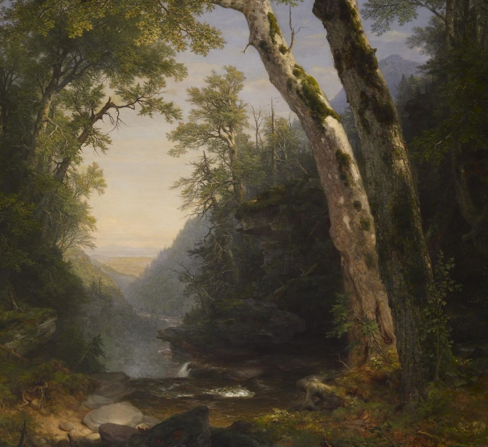
- Capital: Inton (pop. 80,000)
- Population: 24 million
- Majority Race: Human
- Wild Beasts: Black Bears, Giant Rats, Wild Boars
- Uzvu Presence: Medium
- Cthonian Presence: Low
- Magellian Ruin Presence: Medium
- Haunted Tomb Presence: Low
- Resources: grain, timber, livestock, fish
- Area: 720 thousand square miles
- Important NPCs:
- Emperor Ezgar Yargyez (Human) is the head of the Yargyez Empire. He rules from the Royal Palace, in Inton.
- Archmage General Gopa (Human) is the head of the Academy of Knowledge, and resides in Inton. He does not have any personal loyalty to the Yargyez Empire, but cooperates with it in order to continue his research.
- Archbishop Ushra (Human) is the head of the Order of Iazus. She is incredibly dedicated to rooting out Archon worship across Conliah, but worries that her inquisitors are stretched thin.
- Bandit King Lo Vicious (Human) is the head of a province-spanning Tyvenlad syndicate. He operates out of Bridgeport, where he controls the government.
Eastgardia is a temperate region with fertile soil, and numerous lakes and rivers. The heart of the Yargyez Empire is in the Royal Palace, located in the mountain city of Inton. In the Jang River region, there is the city of Bridgeport, which has a corrupt government loyal to the local Bandit King. The Karlsvale region to the south borders Nightglade, and faces constant attacks from Lizardfolk rebels. To the north are the Chainledges region, home to Portborough University, the largest school of the Academy of Knowledge.
Helscar

- Capital: Eithar (pop. 4,000)
- Population: 1.2 million
- Majority Race: Dwarf
- Wild Beasts: Dire Wolves, Giant Spiders, White Carnivorous Apes
- Uzvu Presence: Low
- Cthonian Presence: Low
- Magellian Ruin Presence: Low
- Haunted Tomb Presence: High
- Resources: ore, fish
- Area: 2.9 million square miles
- Important NPCs:
- Chieftain Asbirn (Dwarf) resides in the Highchill Mountains city of Hrafnagil. He is a firebrand who supports soul-binding ancestral veneration.
- Manufacturer Supreme Vasa (Human) is the head of the Artisans Guild. She resides in Eithar.
Helscar is a massive tundra region, which mainly exports ore and requires agricultural exports from Middlestone and Eastgardia for survival. The local chieftains have no formal authority, but are respected by the Imperial provincial governor as representatives of their clans. The region is divided between the western chieftains of the Highchill Mountains who demand greater autonomy, and the eastern chieftains of the Shifting Foothills who willingly submit to Imperial oversight.
Middlestone
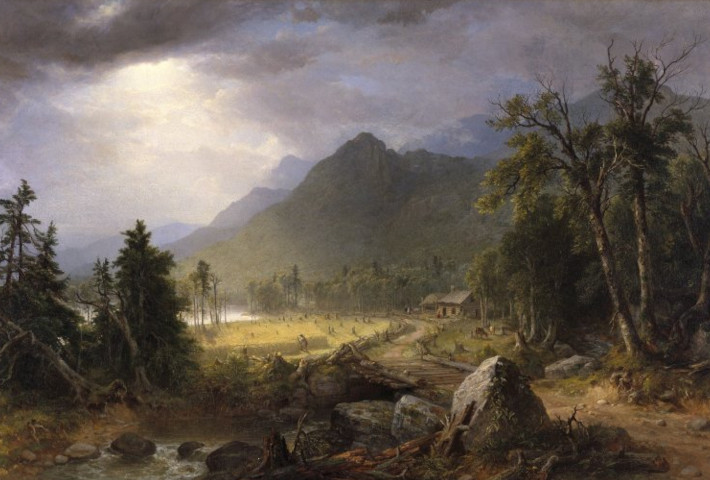
- Capital: Omugi (pop. 40,000)
- Population: 12 million
- Majority Race: Halfling
- Wild Beasts: Giant Ants, Giant Badgers, Giant Bees
- Uzvu Presence: None
- Cthonian Presence: Medium
- Magellian Ruin Presence: Medium
- Haunted Tomb Presence: High
- Resources: grain, wine, livestock
- Area: 1.4 million square miles
- Important NPCs:
- Supreme Commander Taeko (Halfling) is the head of the Belligerantes. She resides in Omugi.
- Lord Kobuno (Halfling) is a noble in the Oto foothills who is seeking to revive Omuzast worship.
Middlestone is divided into three regions. First are the massive Uzu Plains to the north, which produce abundant grain. Secondly are the Oto foothills in the center, which is filled with orchards and vinyards. Last are the Koha Highlands to the south, which are forested and haunted. Halflings of Middlestone are fervently loyal to the Yargyez Empire on the surface, but they are also hostile to outsiders and prone to feuding over land rights. Middlestone is governed by land-owning Halfling nobles who ultimately answer to the Imperial governor.
Valorgale
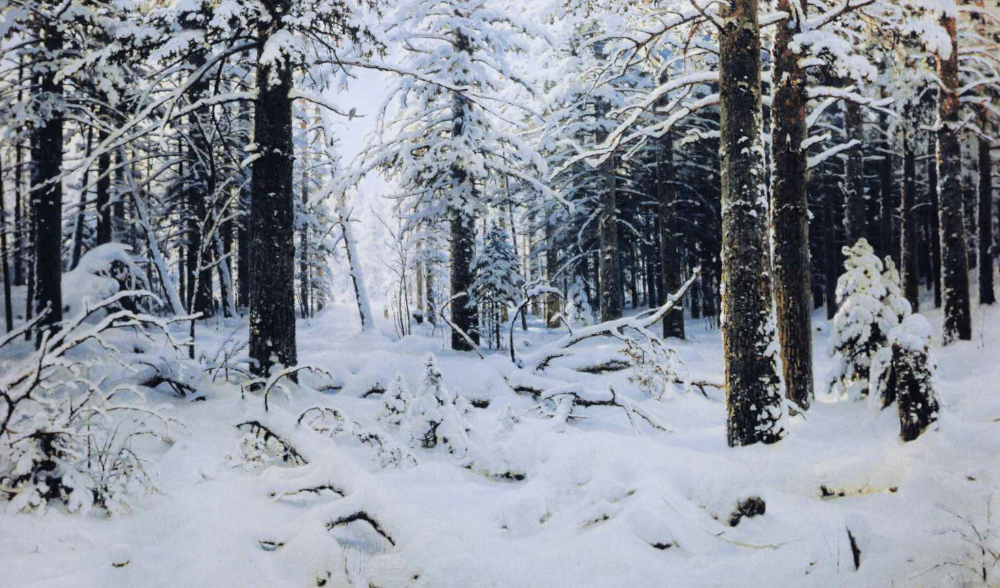
- Capital: Matay (pop. 1,200)
- Population: 370 thousand
- Majority Race: Dark Elf
- Wild Beasts: White Tigers, Wooly Mammoths, Wooly Rhinoceroses
- Uzvu Presence: Low
- Cthonian Presence: High
- Magellian Ruin Presence: Low
- Haunted Tomb Presence: High
- Resources: timber, hunted meat
- Area: 1.8 million square miles
Valorgale is divided into three regions. First is the southern Zama Valley, which is a vast taiga of flowing rivers. Second is the northern Zensuke Peninsula, which is a harsher taiga to the north which borders the Highchill Mountains of Helscar. Last is Iktib Island, which is a massive active volcano at the center of the province. It is jointly governed by an Imperial governor and a council of the Six Ashfallen Tribes. Each of the Ashfallen Tribes has a distinct disposition towards the Yargyez Empire. Distinctly, the Pataf Tribe is conspiring with the Synomachos, the Osti Tribe is reviving worship of the Archon Dreze, and the Tivik Tribe is steadfastly loyal to the Yargyez Empire. Wooly rhinoceros herding for subsistence is common in the Zensuke Peninsula, and timber from the Zama Valley is exported to the rest of the Empire.
Westerwood
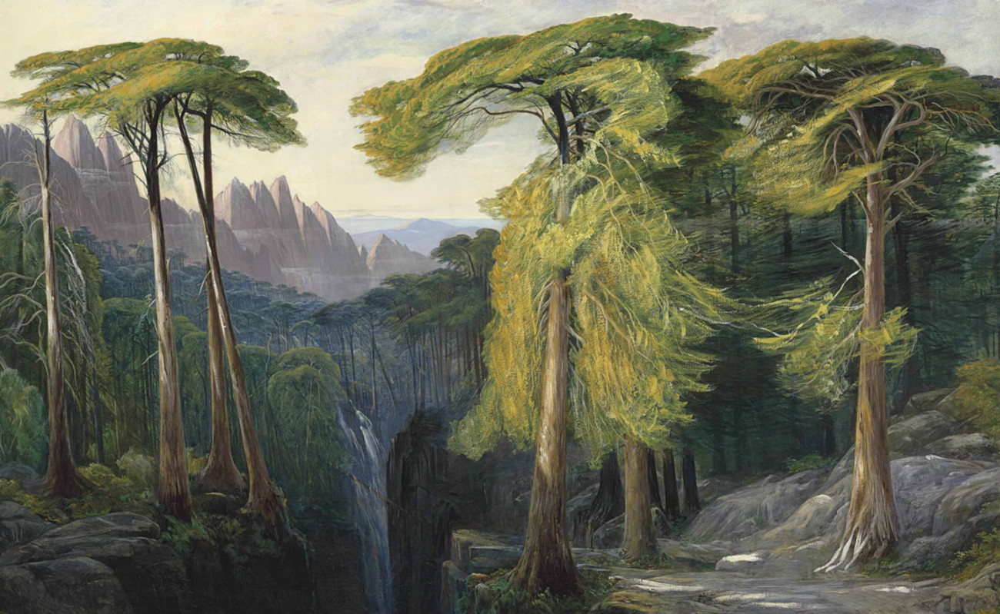
- Capital: Kabat (pop. 5,000)
- Population: 1.5 million
- Majority Race: Wood Elf
- Wild Beasts: Brown Bears, Giant Elks, Giant Owls
- Uzvu Presence: None
- Cthonian Presence: Medium
- Magellian Ruin Presence: Medium
- Haunted Tomb Presence: Low
- Resources: timber, livestock, hunted meat
- Area: 720 thousand square miles
- Important NPCs:
- Khagan Anim Beldek (Wood Elf) is the ruling Khagan of Westerwood. He is fervently loyal to the Yargyez Empire.
- Chieftain Tosir Arakzan (Wood Elf) is a member of the Synomachos conspiracy. He seeks to overthrow Anim Beldek and replace him.
Westerwood is divided into three regions. First is the densely forested Teren Basin at the center, which holds the capital of Kabat and is the political center of Westerwood. Second are the rugged and forested Kara Ates Mountains to the north, which is home to the Wood Elves' ancient capital of Koknar which is long ruined. Last are the semi-arid grasslands of the Ak Ates Mountains to the south, which are occupied by pastoral nomads. Westerwood is ruled chieftains who ultimately answer to the Khagan Anim Beldek of Westerwood, who jointly rules with the Imperial governor. The current Khagan is loyal to the Yargyez Empire, but the Wood Elf Chieftain Tosir Arakzan is planning to overthrow him in the Synomachos conspiracy.
Fair Island
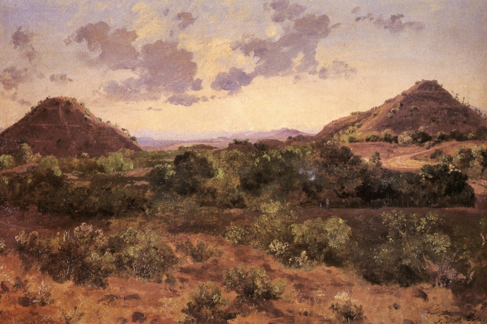
- Capital: Thesekira (pop. 5,000)
- Population: 1.5 million
- Majority Race: High Elf
- Wild Beasts: Giant Eagles, Protoceratopses, Velociraptors
- Uzvu Presence: None
- Cthonian Presence: Low
- Magellian Ruin Presence: High
- Haunted Tomb Presence: Low
- Resources: fruit, wine
- Area: 720 thousand square miles
- Important NPCs:
- King Typhen Maphelius (High Elf) is the ruling king of Fair Island. He is a member of the Synomachos conspiracy, and is planning an invasion on the rest of Conliah.
Fair Island is a massive arid island divided into three regions. The Tispus Coast to the west receives winter rainfall which allows for massive orchards. The Tipsus Coast is home to the capital of Thesekira, as well as the ancient Magellian capital of Atherita which is still inhabited. The Taknis Mountains at the center are sparsely populated grasslands, and the Gastus Coast to the east is a barren, uninhabited desert. The High Elf King Typhen resides in Thesekira, and jointly rules Fair Island with the Imperial governor. However, he is not loyal to the Yargyez Empire and is part of the Synomachos conspiracy.
Wuthelark
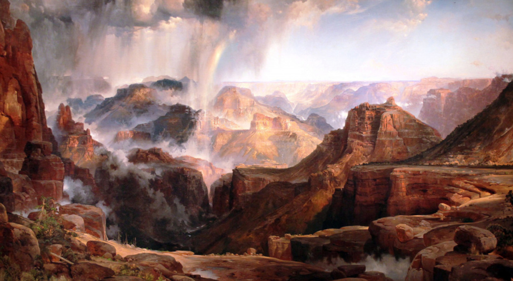

- Capital: Ramadiya (pop. 15,000)
- Population: 4.5 million
- Majority Race: Catfolk
- Wild Beasts: Leapords, Giant Cobras, Giant Scorpions
- Uzvu Presence: Low
- Cthonian Presence: Medium
- Magellian Ruin Presence: Medium
- Haunted Tomb Presence: Low
- Resources: fruit, ore
- Area: 1.8 million square miles
- Important NPCs:
- Willis the Watcher (Catfolk)
is the founder of the Quietest Master Lodge in Wuthelark. He trains new members in the art of silent contemplation.
- Pip the Crier (Catfolk)
is a legendary prankster who seeks a revival of Lozie worship.
Wuthelark is divided into three regions. First is the southern Tamain Jungle, which is an untamed wilderness ruled by land-owning Catfolk nobles who ultimately answer to the Imperial governor. Second are the Karamain Highlands, which are a semi-arid region dividing the southern jungle and the northern desert, which is hardly inhabited. Last is the Namara Desert to the north, which is home to nomadic tribes who resist Imperial rule. They have not formed an active resistance, but essentially do not respect the laws of the Yargyez Empire and view it as an illegitimate occupier of their nomadic lands.
Nightglade
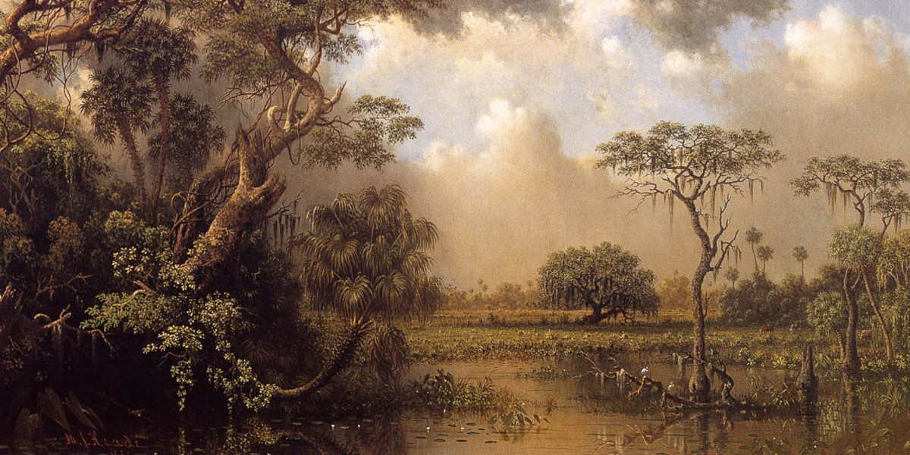
- Capital: Emtong (pop. 20,000)
- Population: 12 million
- Majority Race: Lizardfolk
- Wild Beasts: Giant Crocodiles, Giant Leeches, Giant Turtles
- Cthonian Presence: Medium
- Uzvu Presence: High
- Magellian Ruin Presence: Low
- Haunted Tomb Presence: Medium
- Resources: fish
- Area: 720 thousand square miles
Nightglade is divided into two regions. First is the Kangiet Highlands to the west, which are the headwaters of the marsh. Second is the Aungkong Lowlands to the east, which drain the rivers into the Talantic Ocean. Since the conquest of the Yargyez Empire, the entire region has been in an open civil war between the land-owning Lizardfolk nobles who willingly surrendered to the Yargyez Empire and answer the Imperial governor, and the vast majority of Lizardfolk who view the Yargyez Empire's presence as an illegitimate occupier of their lands. There are numerous deep caves across Nightglade which have served as fortresses for Lizardfolk rebels.
Image Credits
All images are either original for this sourcebook or taken from the public domain, but for the reader's convenience public domain images are cited here.
Cover
- Clouds by John Constable, 1822
Introduction
- Waterfalls at Subiaco by Joseph Anton Koch, c. 1813
History: Mythological
- The Glory of Psara by Nikolaos Gyzis, 1898
History: Written
- Serpentara Landscape with the Procession of the Magi by Joseph Anton Koch, 1820
Races
- Landschaft nach einem Gewitter by Joseph Anton Koch, c. 1830
Religion
- The Monastery of Arkadios by Theodoros Vryzakis, c. 1867
Magic
- The Parthenon by Frederic Edwin Church, 1871
Factions
- The German of Old Patras blesses the flag by Theodoros Vryzakis, 1865
Monsters
- Henry V Discovering the Conspirators by Henry Fuseli, c. 1780
Provinces
- The Catskills by Asher B. Durand, 1858
- The Icebergs by Frederic Edwin Church, 1861
- The First Harvest in the Wilderness by Asher B. Durand, c. 1855
- Winter by Ivan Shishkin, 1890
- Forest of Bavella by Edward Lear, c. 1869
- Piramides del Sol y de la Luna Jose Maria Velasco, 1878
- Brazilian Virgin Forest by Johann Moritz Rugendas, 1830
- Chasm of the Colorado by Thomas Moran, c. 1874
- The Great Florida Marsh by Martin Johnson Heade, 1886
Licensing
Nephelai is released into the public domain by the terms of the CC0
1.0 Universal license. Simply put, you are granted the maximum possible
rights to re-use this work as I may grant according to the law. I have
chosen to release Nephelai to the public domain in hopes that people in
general find it useful, rather than a desire to receive income or
credit. I know that players and GMs have many options besides Nephelai,
and I felt making it public domain could sweeten the deal for some to
try it out.
CC0 1.0 Universal
CREATIVE COMMONS CORPORATION IS NOT A LAW FIRM AND DOES NOT PROVIDE LEGAL SERVICES. DISTRIBUTION OF THIS DOCUMENT DOES NOT CREATE AN ATTORNEY-CLIENT RELATIONSHIP. CREATIVE COMMONS PROVIDES THIS INFORMATION ON AN "AS-IS" BASIS. CREATIVE COMMONS MAKES NO WARRANTIES REGARDING THE USE OF THIS DOCUMENT OR THE INFORMATION OR WORKS PROVIDED HEREUNDER, AND DISCLAIMS LIABILITY FOR DAMAGES RESULTING FROM THE USE OF THIS DOCUMENT OR THE INFORMATION OR WORKS PROVIDED HEREUNDER.
Statement of Purpose
The laws of most jurisdictions throughout the world automatically confer exclusive Copyright and Related Rights (defined below) upon the creator and subsequent owner(s) (each and all, an "owner") of an original work of authorship and/or a database (each, a "Work").
Certain owners wish to permanently relinquish those rights to a Work for the purpose of contributing to a commons of creative, cultural and scientific works ("Commons") that the public can reliably and without fear of later claims of infringement build upon, modify, incorporate in other works, reuse and redistribute as freely as possible in any form whatsoever and for any purposes, including without limitation commercial purposes. These owners may contribute to the Commons to promote the ideal of a free culture and the further production of creative, cultural and scientific works, or to gain reputation or greater distribution for their Work in part through the use and efforts of others.
For these and/or other purposes and motivations, and without any expectation of additional consideration or compensation, the person associating CC0 with a Work (the "Affirmer"), to the extent that he or she is an owner of Copyright and Related Rights in the Work, voluntarily elects to apply CC0 to the Work and publicly distribute the Work under its terms, with knowledge of his or her Copyright and Related Rights in the Work and the meaning and intended legal effect of CC0 on those rights.
1. Copyright and Related Rights.
A Work made available under CC0 may be protected by copyright and related or neighboring rights ("Copyright and Related Rights"). Copyright and Related Rights include, but are not limited to, the following:
-
the right to reproduce, adapt, distribute, perform, display, communicate, and translate a Work;
-
moral rights retained by the original author(s) and/or performer(s);
-
publicity and privacy rights pertaining to a person's image or likeness depicted in a Work;
-
rights protecting against unfair competition in regards to a Work, subject to the limitations in paragraph 4(a), below;
-
rights protecting the extraction, dissemination, use and reuse of data in a Work;
-
database rights (such as those arising under Directive 96/9/EC of the European Parliament and of the Council of 11 March 1996 on the legal protection of databases, and under any national implementation thereof, including any amended or successor version of such directive); and
-
other similar, equivalent or corresponding rights throughout the world based on applicable law or treaty, and any national implementations thereof.
2. Waiver.
To the greatest extent permitted by, but not in contravention of, applicable law, Affirmer hereby overtly, fully, permanently, irrevocably and unconditionally waives, abandons, and surrenders all of Affirmer's Copyright and Related Rights and associated claims and causes of action, whether now known or unknown (including existing as well as future claims and causes of action), in the Work (i) in all territories worldwide, (ii) for the maximum duration provided by applicable law or treaty (including future time extensions), (iii) in any current or future medium and for any number of copies, and (iv) for any purpose whatsoever, including without limitation commercial, advertising or promotional purposes (the "Waiver"). Affirmer makes the Waiver for the benefit of each member of the public at large and to the detriment of Affirmer's heirs and successors, fully intending that such Waiver shall not be subject to revocation, rescission, cancellation, termination, or any other legal or equitable action to disrupt the quiet enjoyment of the Work by the public as contemplated by Affirmer's express Statement of Purpose.
3. Public License Fallback.
Should any part of the Waiver for any reason be judged legally invalid or ineffective under applicable law, then the Waiver shall be preserved to the maximum extent permitted taking into account Affirmer's express Statement of Purpose. In addition, to the extent the Waiver is so judged Affirmer hereby grants to each affected person a royalty-free, non transferable, non sublicensable, non exclusive, irrevocable and unconditional license to exercise Affirmer's Copyright and Related Rights in the Work (i) in all territories worldwide, (ii) for the maximum duration provided by applicable law or treaty (including future time extensions), (iii) in any current or future medium and for any number of copies, and (iv) for any purpose whatsoever, including without limitation commercial, advertising or promotional purposes (the "License"). The License shall be deemed effective as of the date CC0 was applied by Affirmer to the Work. Should any part of the License for any reason be judged legally invalid or ineffective under applicable law, such partial invalidity or ineffectiveness shall not invalidate the remainder of the License, and in such case Affirmer hereby affirms that he or she will not (i) exercise any of his or her remaining Copyright and Related Rights in the Work or (ii) assert any associated claims and causes of action with respect to the Work, in either case contrary to Affirmer's express Statement of Purpose.
4. Limitations and Disclaimers.
-
No trademark or patent rights held by Affirmer are waived, abandoned, surrendered, licensed or otherwise affected by this document.
-
Affirmer offers the Work as-is and makes no representations or warranties of any kind concerning the Work, express, implied, statutory or otherwise, including without limitation warranties of title, merchantability, fitness for a particular purpose, non infringement, or the absence of latent or other defects, accuracy, or the present or absence of errors, whether or not discoverable, all to the greatest extent permissible under applicable law.
-
Affirmer disclaims responsibility for clearing rights of other persons that may apply to the Work or any use thereof, including without limitation any person's Copyright and Related Rights in the Work. Further, Affirmer disclaims responsibility for obtaining any necessary consents, permissions or other rights required for any use of the Work.
-
Affirmer understands and acknowledges that Creative Commons is not a party to this document and has no duty or obligation with respect to this CC0 or use of the Work.